6. TVINNTÖLUR¶
6.1. Talnakerfin¶
6.1.1. Náttúrlegar tölur¶
Tölurnar 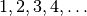 mynda mengi náttúrlegra talna sem við
táknum með . Á þessu mengi höfum við skilgreindar
tvær aðgerðir, samlagningu og margföldun, þannig að fyrir sérhvert
par 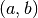 af náttúrlegum tölum  og
og  er
úthlutað nákvæmlega einni tölu 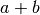 sem nefnist summa
og og annarri tölu 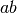 sem nefnist margfeldi
og . Við táknum margfeldið einnig með
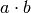. Um þessar aðgerðir gilda nokkrar reiknireglur
er
úthlutað nákvæmlega einni tölu 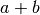 sem nefnist summa
og og annarri tölu 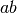 sem nefnist margfeldi
og . Við táknum margfeldið einnig með
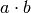. Um þessar aðgerðir gilda nokkrar reiknireglur
| 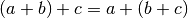 | tengiregla fyrir samlagningu |
| 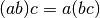 | tengiregla fyrir margföldun |
| 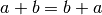 | víxlregla fyrir samlagningu |
| 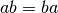 | víxlregla fyrir margföldun |
| 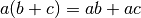 | dreifiregla |
| :math:`1` er margföldunarhlutleysa |
Við höfum röðun þannig að um sérhverjar tvær tölur og
gildir eitt af þrennu: :math:`a` er minni en :math:`b`,
táknað 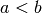, :math:`a` er jafnt og :math:`b`, táknað
 eða :math:`a` er stærra en :math:`b`, táknað 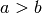.
Þetta er skilgreint þannig að er sagt vera minna en
, ef til er náttúrleg tala
eða :math:`a` er stærra en :math:`b`, táknað 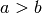.
Þetta er skilgreint þannig að er sagt vera minna en
, ef til er náttúrleg tala  þannig að 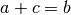,
og er sagt vera stærra en , ef er minni
en .
þannig að 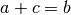,
og er sagt vera stærra en , ef er minni
en .
Um röðun náttúrlegra talna gilda tvær mikilvægar reglur
| ef þá er 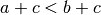 | röðun er óbreytt við samlagningu |
| ef þá er 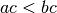 | röðun er óbreytt við margföldun |
Ef og , þá nefnist talan mismunur
og , táknað 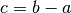. Aðgerðin að finna mismun
nefnist frádráttur.
Náttúrleg tala er sögð vera deilanleg með
tölunni 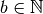 ef til er
þannig að 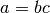. Allar tölur
eru deilanlegar með  og sjálfri sér, því
. Þær nátturlegu tölur 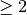 sem aðeins eru
deilanlegar með og sjálfri sér nefnast frumtölur
(prímtölur). Fyrstu frumtölurnar eru
og sjálfri sér, því
. Þær nátturlegu tölur 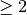 sem aðeins eru
deilanlegar með og sjálfri sér nefnast frumtölur
(prímtölur). Fyrstu frumtölurnar eru
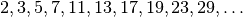
Sérhverja náttúrlega tölu 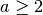 má skrifa sem margfeldi frumtalna
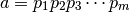
þar sem sumar frumtölur  geta verið endurteknar og í þessari
framsetningu hafa frumtölurnar sjálfar aðeins einn þátt. Sem dæmi getum
við tekið
geta verið endurteknar og í þessari
framsetningu hafa frumtölurnar sjálfar aðeins einn þátt. Sem dæmi getum
við tekið
7=7, \quad 24=2\cdot 2\cdot 2\cdot 3=2^3\cdot 3, \quad 250=2\cdot 5\cdot 5\cdot 5=2\cdot 5^3. Þáttun á náttúrlegum tölum í frumtölur nefnist *frumþáttun*.
Til þess að gera okkur mynd af náttúrlegu tölunum þurfum við fyrst að
bæta núlli  við talnakerfið. Við setjum
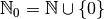 og útvíkkum
reikniaðgerðirnar. Allar reiknireglurnar gilda áfram og við fáum eina
reglu til viðbótar:
við talnakerfið. Við setjum
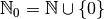 og útvíkkum
reikniaðgerðirnar. Allar reiknireglurnar gilda áfram og við fáum eina
reglu til viðbótar:
| :math:`0` er samlagningarhlutleysa |
Fyrri röðurnareglan gildir áfram en sú síðari aðeins ef 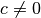.
(12,1) (0,0)(1,0)11 (5,-0.1)(1,0)5(0,1)0.2 (5,-0.2)(0,0)[t]:math:0 (6,-0.2)(0,0)[t]:math:1 (7,-0.2)(0,0)[t]:math:2 (8,-0.2)(0,0)[t]:math:3 (9,-0.2)(0,0)[t]:math:4 (10,-0.4)(0,0)[t]:math:dots (11,-0.2)(0,0)[t]:math:{{mathbb N}}
Til þess að gera okkur mynd af náttúrlegu tölunum veljum við okkur
viðmiðunarpunkt á beinni línu og setjum í hann. Síðan veljum
við einingarlengd á línunni og mörkum punkt til hægri við í
einingarfjarlægð og táknum hann með . Síðan eru haldið áfram
eins og myndin sýnir. Þá höfum við að ef og aðeins ef
er hægra megin við á talnalínunni. Nú er hægt að
lýsa reikningsaðgerðunum á 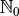 sem færslum á
talnalínunni.
6.1.2. Heilar tölur¶
Reikningur með náttúrlegar tölur er ófullkominn meðal annars vegna þess
að ekki er alltaf hægt að framkvæma frádrátt þ.e.a.s. að finna
náttúrlega tölu  þannig að . Þetta er aðeins hægt
ef . Talan nefnist þá mismunur og
og er táknuð með 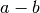.
þannig að . Þetta er aðeins hægt
ef . Talan nefnist þá mismunur og
og er táknuð með 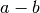.
Til þess að ráða bót á þessu er talnakerfið stækkað þannig að bætt er
við tölunni , sem nefnist núll, og síðan er bætt við tölunum
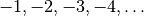. Þetta stækkaða kerfi nefnist heilar tölur
og er táknað með  .
.
Á er skilgreind samlagning og margföldun. Um
þessar aðgerðir gilda sömu reglur og fyrir náttúrlegar tölur. Að auki
höfum við að sérhver tala á sér samlagningarandhverfu, en það þýðir að
fyrir sérhvert 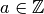 er til
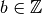, sem nefnist samlagningarandhverfa
tölunnar , þannig að . Samlagningarandhverfan er
táknuð með .
Við gerum okkur einnig mynd af heilum tölum með því að marka þær á talnalínu.
(12,1) (0,0)(1,0)12 (1,-0.1)(1,0)9(0,1)0.2 (1,-0.2)(0,0)[t]:math:-4 (2,-0.2)(0,0)[t]:math:-3 (3,-0.2)(0,0)[t]:math:-2 (4,-0.2)(0,0)[t]:math:-1 (5,-0.2)(0,0)[t]:math:0 (6,-0.2)(0,0)[t]:math:1 (7,-0.2)(0,0)[t]:math:2 (8,-0.2)(0,0)[t]:math:3 (9,-0.2)(0,0)[t]:math:4 (10,-0.4)(0,0)[t]:math:dots (11,-0.2)(0,0)[t]:math:{{mathbb Z}}
6.1.3. Ræðar tölur¶
Deiling er ófullkomin aðgerð í heilu tölunum. Til þess að bæta úr því er
talnakerfið stækkað með því að innleiða ræðar tölur. Ræðar tölur
samanstanda af öllum brotum 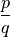 þar sem  og
og
 eru heilar tölur og 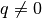. Við táknum brot einnig
með 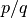 og 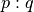.
eru heilar tölur og 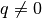. Við táknum brot einnig
með 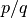 og 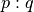.
Tvö brot og 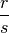 skilgreina sömu ræðu töluna ef til er heiltala 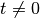
þannig að 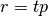 og 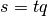 eða 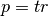 og  .
Þannig er til dæmis
.
Þannig er til dæmis
\dfrac 13=\dfrac 26=\dfrac {-2}{-6}=\dfrac 39=\dfrac{-3}{-9}=\cdots. Á ræðum tölum höfum við tvær reikningsaðgerðir samlagningu og
margföldun. Þær eru skilgreindar með brotunum
\dfrac pq+\dfrac rs=\dfrac{ps+qr}{qs}, \qquad \dfrac pq\cdot \dfrac rs=\dfrac{pr}{qs}. Við hugsum okkur að heilu tölurnar séu hlutmengi í ræðu tölunum,
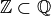 með því að gera ekki
greinarmun á heilu tölunni  og ræðu tölunni 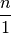.
Núll er samlagningarhlutleysa, fyrir öll
, og er margföldunarhlutleysa,
fyrir öll .
og ræðu tölunni 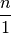.
Núll er samlagningarhlutleysa, fyrir öll
, og er margföldunarhlutleysa,
fyrir öll .
Við fáum nákvæmlega sömu reiknireglur fyrir ræðar tölur og fyrir heilar
tölur en til viðbótar kemur að sérhver ræð tala 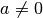 á sér
margföldunarandhverfu, sem við táknum með  . Ef
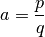 þar sem 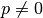 og eru
heiltölur, þá er 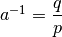.
. Ef
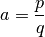 þar sem 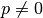 og eru
heiltölur, þá er 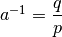.
Hægt er að úthluta sérhverri ræðri tölu punkti á talnalínunni, þannig að sérhver jákvæð ræð tala svari til lengdar á striki. Með þessu er hægt að túlka reikningsaðgerðirnar sem færslur á talnalínunni. Það er töluvert mál að útfæra þetta í smáatriðum, en þið þekkið þetta efni öll úr grunn- og framhaldsskóla.
6.1.4. Rauntölur¶
Það er eðlilegt að spyrja sig hvort sérhver punktur á talnalínunni sé
gefinn með ræðri tölu. Það er jafngilt því að spyrja hvort sérhver lengd
á striki sé gefin með ræðri tölu. Forn-Grikkir hugsuðu mikið um þetta
vandamál og sáu að svarið við spurningunni er neikvætt. Regla
Pýþagórasar segir okkur að langhlið í rétthyrndum þríhyrningi
með skammhliðar af lengd uppfyllir 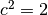. Það er síðan
einfalt að sýna fram á að ekki er hægt að skrifa sem ræða
tölu. Þessi tala er venjulega nefnd kvaðratrótin af  og er
táknuð með
og er
táknuð með  .
.
Rauntölurnar  eru upp fundnar til þess meðal
annars að leysa úr þeim vandræðum að geta ekki tjáð lengdir á strikum og
ferlum í rúmfræði með ræðum tölum. Við lítum á talnakerfið
eru upp fundnar til þess meðal
annars að leysa úr þeim vandræðum að geta ekki tjáð lengdir á strikum og
ferlum í rúmfræði með ræðum tölum. Við lítum á talnakerfið
 sem punkta á talnalínunni og stækkum það þannig
að til sérhvers punkts á línunni svari tala og látum
tákna mengi allra slíkra talna. Aðgerðirnar
samlagning og margföldun eru síðan skilgreindar með sams konar færslum
og fyrir ræðar tölur. Þetta er raunar ekki einfalt að gera í smáatriðum.
sem punkta á talnalínunni og stækkum það þannig
að til sérhvers punkts á línunni svari tala og látum
tákna mengi allra slíkra talna. Aðgerðirnar
samlagning og margföldun eru síðan skilgreindar með sams konar færslum
og fyrir ræðar tölur. Þetta er raunar ekki einfalt að gera í smáatriðum.
(12,1) (0,0)(1,0)12 (1,-0.1)(1,0)9(0,1)0.2 (1,-0.2)(0,0)[t]:math:-4 (2,-0.2)(0,0)[t]:math:-3 (3,-0.2)(0,0)[t]:math:-2 (4,-0.2)(0,0)[t]:math:-1 (5,-0.2)(0,0)[t]:math:0 (6,-0.2)(0,0)[t]:math:1 (7,-0.2)(0,0)[t]:math:2 (8,-0.2)(0,0)[t]:math:3 (9,-0.2)(0,0)[t]:math:4 (10,-0.4)(0,0)[t]:math:dots (11,-0.2)(0,0)[t]:math:{{mathbb R}} (6.414,-0.25)(0,0)[t]:math:sqrt 2 ` (8.1516,-0.3)(0,0)[tl]:math:pi` (6.414,-0.1)(0,1)0.2 (8.1516,-0.1)(0,1)0.2
Sérhver rauntala sem ekki er ræð tala nefnist óræð tala. Ekki er neitt sérstakt tákn notað fyrir mengi óræðra talna í stærðfræðinni, svo það er oftast táknað .
Rauntölurnar uppfylla allar sömu reiknireglur of ræðar tölur, þannig að
fyrir rauntölur , og höfum við
| tengiregla fyrir samlagningu | |
| tengiregla fyrir margföldun | |
| víxlegra fyrir samlagningu | |
| víxlegra fyrir margföldun | |
| dreifiregla | |
| :math:`0` er samlagningarhlutleysa | |
| :math:`1` er margföldunarhlutleysa |
Sérhver rauntala á sér samlagningarandhverfu sem er ótvírætt
ákvörðuð og við táknum hana með og sérhver rauntala
á sér margföldunarandhverfu sem er
ótvírætt ákvörðuð. Við athugum að 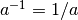.
Við höfum röðun  á sem er þannig að um
sérhverjar tvær tölur og gildir eitt af þrennu
, eða 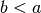. Við skrifum einnig
ef . Við höfum eftirtaldar reglur um röðun rauntalna
á sem er þannig að um
sérhverjar tvær tölur og gildir eitt af þrennu
, eða 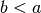. Við skrifum einnig
ef . Við höfum eftirtaldar reglur um röðun rauntalna
| ef og 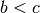, þá er | röðun er gegnvirk |
| ef þá er | röðun er óbreytt við samlagningu |
ef og  , þá er , þá er |
röðun er óbreytt við margföldun |
| með jákvæðri tölu | |
ef og  , þá er 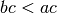 , þá er 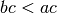 |
röðun er viðsnúin við margföldun |
| með neikvæðri tölu |
Við höfum líka hlutröðun :math:` leq ` á . Við
skrifum 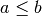 og segjum að sé minni eða jafnt
, ef eða . Eins skrifum við
og segjum að :math:`a` sé stærri eða jafnt :math:`b`
ef eða .
Ef og , þá skilgreinum við mismunandi bil.
| opið bil | |
| lokað bil | |
| hálf-opið bil | |
| hálf-opið bil | |
| opin vinstri hálflína | |
| lokuð vinstri hálflína | |
| opin hægri hálflína | |
| lokuð hægri hálflína | |
| öll rauntalnalínan | |
| eins punkts bil |
Stundum er skrifað í stað , ![(a,b]](_images/math/d17f423539959c57aad1c20cb6c7ed9ccfee4f65.png) í
stað o.s.frv.
í
stað o.s.frv.
Á sérhverju opnu bili eru óendanlega margar ræðar tölur og óendanlega margar óræðar tölur.
Fyrir sérhvert skilgreinum við tölugildið
af með
|x|=\begin{cases} x &x\geq 0, \\ -x &x <0. \end{cases} Talan :math:`|x|` mælir fjarlægð milli :math:`0` og :math:`x` á
talnalínunni. Ef gefnar eru tvær rauntölur og  , þá
mælir fjarlægðina á milli þeirra. Ef og
, þá
mælir fjarlægðina á milli þeirra. Ef og
 eru rauntölur og
eru rauntölur og  , þá er
, þá er
\{x\in {{\mathbb R}}\,;\, |x-a|<\varepsilon\}=(a-\varepsilon,a+\varepsilon) opið bil með miðju í :math:`a` og þvermálið :math:`2\varepsilon`.
6.1.5. Takmarkanir rauntalnakerfisins¶
Við höfum séð að öll talnakerfin ,
og hafa sínar takmarkanir
og það sama á við um rauntölurnar . Í mengi
náttúrlegra talna er frádráttur ófullkomin aðgerð. Í mengi heilla talna
er deiling ófullkomin aðgerð. Ræðu tölurnar duga ekki til þess að lýsa
lengdum á strikum og ferlum sem koma fyrir í rúmfræðinni.
Við vitum að rauntala í öðru veldi er alltaf stærri eða jöfn núlli svo
jafnan getur ekki haft lausn. Sama er að segja um annars
stigs jöfnuna , . Hún hefur enga lausn
ef . Það er auðvelt að skrifa niður dæmi um margliður
sem hafa engar núllstöðvar í , en stig þeirra þarf
að vera slétt tala, því margliður af oddatölustigi hafa alltaf núllstöð.
Nú er eðlilegt að spyrja, hvort hægt sé að stækka rauntalnakerfið yfir í
stærra mengi þannig að innan þess mengis sé hægt að finna lausn á annars
stigs jöfnunni og hvort slíkt talnakerfi gefi af sér
lausnir á fleiri jöfnum sem ekki eru leysanlegar í
.
Ímyndum okkur nú augnablik að til sé talnakerfi sem inniheldur
rauntölurnar sem hlutmengi og að þar sé stak  sem uppfyllir
. Þá er að sjálfsögðu ekki rauntala. Við gefum
okkur að allar reiknireglur fyrir rauntölur gildi áfram. Víxlreglan
fyrir margföldun segir okkur þá að
sem uppfyllir
. Þá er að sjálfsögðu ekki rauntala. Við gefum
okkur að allar reiknireglur fyrir rauntölur gildi áfram. Víxlreglan
fyrir margföldun segir okkur þá að  fyrir allar rauntölur
. Tökum nú rauntölur , , og
fyrir allar rauntölur
. Tökum nú rauntölur , , og
 og athugum hvað reiknireglurnar segja um summu og margfeldi
talnanna og
og athugum hvað reiknireglurnar segja um summu og margfeldi
talnanna og  ,
,
(a+ib)+(c+id)=a+(c+ib)+id=(a+c)+i(b+d) og
\begin{aligned} (a+ib)(c+id)&=ac+ibc+aid+ibid \\ &=ac+ibc+ iad+i^2 bd =(ac-bd)+i(ad+bc). \end{aligned} Þessar tvær formúlur gefa okkur forskrift að því hvernig leggja á saman
og margfalda saman tölur af gerðinni þannig að út komi tölur af sömu gerð.
6.2. Tvinntalnaplanið¶
Nú snúum við okkur að spurningunni um það hvort hægt sé að skilgreina
útvíkkun á þar sem til er tala sem
uppfyllir . Það kemur í ljós að slíkt kerfi er til og að
sérhverja tölu í því má skrifa sem þar sem og
eru rauntölur.
6.2.1. Skilgreining á tvinntölum¶
MYND VANTAR HÉR!!!siiibmynd0101Mynd: Hnit punkts í plani Lítum nú á mengi allra vigra í plani. Sérhver vigur hefur hnit sem segja okkur hvar lokapunktur vigurs er staðsettur ef upphafspunktur hans er settur í upphafspunkt hnitakerfisins. Á mengi allra vigra höfum við tvær aðgerðir, samlagningu og margföldun með tölu. Samlagningunni er lýst með hnitum,
(a,b)+(c,d)=(a+c,b+d). og margfeldi tölunnar :math:`a` og vigursins :math:`(c,d)` er
a(c,d)=(ac,ad). Við skilgreinum nú margföldun á :math:`{{\mathbb R}}^2` með hliðsjón
af formúlunni sem við uppgötvuðum hér að framan,
Talnaplanið  með venjulegri samlagningu og
þessari margföldun nefnist tvinntölur og er táknað með
með venjulegri samlagningu og
þessari margföldun nefnist tvinntölur og er táknað með
 . Nú er auðvelt að sannfæra sig um að víxl-,
tengi- og dreifireglur gildi um þessa margföldun
. Nú er auðvelt að sannfæra sig um að víxl-,
tengi- og dreifireglur gildi um þessa margföldun
| tengiregla fyrir samlagningu | |
| tengiregla fyrir margföldun | |
| víxlregla fyrir samlagningu | |
| víxlregla fyrir margföldun | |
| dreifiregla | |
| :math:`(0,0)` er samlagningarhlutleysa | |
| :math:`(1,0)` er margföldunarhlutleysa |
Ljóst er að  er samlagningarandhverfa . Við
athugum að jafnan segir okkur að talan
eigi sér margföldunarandhverfuna
er samlagningarandhverfa . Við
athugum að jafnan segir okkur að talan
eigi sér margföldunarandhverfuna
Við tökum eftir að
(a,0)(c,d)=(ac,ad)=a(c,d). sem segir okkur að margföldun með vigrinum :math:`(a,0)` sé það sama og
margföldun með tölunni . Eins sjáum við að vigrar af gerðinni
haga sér eins og rauntölur því
(a,0)+(b,0)=(a+b,0) \qquad \text{ og } \qquad (a,0)(b,0)=(ab,0). Í mengi tvinntalna gerum við því ekki greinarmun á rauntölunni
og vigrinum og lítum á lárétta hnitaásinn
sem
rauntalnalínuna . Við skrifum þá sérstaklega
í stað og í stað 
Lítum nú á vigurinn  sem við táknum með . Um hann
gildir
sem við táknum með . Um hann
gildir
i^2=(0,1)^2=(0,1)(0,1)=(-1,0)=-1. Sérhvern vigur :math:`(a,b)` má skrifa sem samantekt
Við skrifum og í stað
og og erum þar með komin með framsetninguna
6.2.2. Veldareglur¶
Ef  er tvinntala þá getum við skilgreint heiltöluveldi þannig
að ,
er tvinntala þá getum við skilgreint heiltöluveldi þannig
að ,  , og þar sem allir
þættirnir eru eins og fjöldi þeirra er . Fyrir
eru neikvæðu veldin skilgreind þannig að
, og þar sem allir
þættirnir eru eins og fjöldi þeirra er . Fyrir
eru neikvæðu veldin skilgreind þannig að  er margföldunarandhverfan af og fyrir neikvæð er
. Með þessu fást sömu veldareglur og gilda um
rauntölur
er margföldunarandhverfan af og fyrir neikvæð er
. Með þessu fást sömu veldareglur og gilda um
rauntölur
6.2.3. Tvíliðureglan¶
Okkar gamli kunningi, tvíliðureglan, er eins fyrir tvinntölur og rauntölur,
(a+b)^n=\sum_{k=0}^n\binom nk a^kb^{n-k} þar sem *tvíliðustuðlarnir* eru gefnir með
\binom nk=\dfrac{n(n-1)\cdots(n-k+1)}{k!}=\dfrac{n!}{(n-k)!k!}, fyrir :math:`n=0,1,2,3,\dots` og :math:`k=0,\dots,n`. Við köllum þennan
stuðul yfir  og sjáum beint frá formúlunni að
tvíliðustuðlarnir eru samhverfir í þeim skilningi að
og sjáum beint frá formúlunni að
tvíliðustuðlarnir eru samhverfir í þeim skilningi að
\binom nk=\binom n{n-k}. Tvíliðustuðlarnir uppfylla
\binom n0=\binom nn=1 fyrir :math:`n=0,1,2,\dots` og rakningarformúluna
\binom nk=\binom{n-1}{k-1}+\binom{n-1}k, fyrir :math:`n=2,3,4,\dots` og :math:`k=1,2,\dots,n-1`. Þessari
rakningu er best lýst í þríhyrningi Pascals, en línurnar í honum geyma
alla tvíliðurstuðlana. Fyrstu  línurnar, , í
honum eru
línurnar, , í
honum eru
6.2.4. Raunhluti, þverhluti og samok¶
Sérhverja tvinntölu má rita sem  þar sem
og eru rauntölur. Talan nefnist þá
raunhluti tölunnar og talan nefnist þverhluti
hennar. Við táknum raunhlutann með og
þverhlutann með .
þar sem
og eru rauntölur. Talan nefnist þá
raunhluti tölunnar og talan nefnist þverhluti
hennar. Við táknum raunhlutann með og
þverhlutann með .
Tvinntala er sögð vera rauntala ef
og hún er sögð vera hrein þvertala
ef .
Ef , og
, þá nefnist talan
samok tölunnar . Athugið að
 er spegilmynd í raunásnum og því er
. Við höfum nokkrar reiknireglur um samok
er spegilmynd í raunásnum og því er
. Við höfum nokkrar reiknireglur um samok
\begin{aligned} z\bar z&=(x+iy)(x-iy)=x^2+y^2 \\ z+\bar z&=2x=2\, {{\operatorname{Re\, }}}\, z, \\ z-\bar z&=2iy=2i{{\operatorname{Im\, }}}\, z.\\ \overline{z+w} &= \bar z+ \bar w \\ \overline{z-w} &= \bar z- \bar w \\ \overline{zw} &= \bar z\cdot \bar w \\ \overline{z/w} &= \bar z/ \bar w \\ |\bar z|&=|z| \end{aligned} Við höfum að :math:`z` er rauntala þá og því aðeins að :math:`z=\bar z`
og að er hrein þvertala þá og því aðeins að .
6.2.5. Lengd og stefnuhorn¶
MYND VANTAR HÉR!!!siiibmynd0102 Ef , og , þá nefnist talan
|z|=\sqrt{x^ 2+y^2}, *lengd*, *tölugildi* eða *algildi* tvinntölunnar :math:`z`. Ef
og hægt er að skrifa tvinntöluna
á forminu
z=|z|(\cos \theta +i\sin \theta), þá nefnist talan :math:`\theta` *stefnuhorn* eða *horngildi*
tvinntölunnar og stærðtáknið í hægri hliðinni nefnist pólform
tvinntölunnar :math:`z`. Hornaföllin og eru
lotubundin með lotuna  og því eru allar tölur af gerðinni
með einnig stefnuhorn
fyrir . Raðtvenndin er nefnd pólhnit eða
skauthnit tölunnar .
og því eru allar tölur af gerðinni
með einnig stefnuhorn
fyrir . Raðtvenndin er nefnd pólhnit eða
skauthnit tölunnar .
Við höfum að
\tan \theta=\dfrac{\sin\theta}{\cos\theta} =\dfrac{r\sin\theta}{r\cos\theta}=\dfrac yx og af því leiðir að hornið er gefið með formúlunni
\theta(z)=\arctan\bigg(\dfrac yx\bigg). Athugið að það eru miklar takmarkanir á þessri formúlu, því hún gildir
aðeins fyrir  , því fallið gefur okkur gildi á
bilinu .
, því fallið gefur okkur gildi á
bilinu .
Nú skulum við leiða út formúlu fyrir stefnuhorni tvinntölunnar
sem gefur okkur samfellt fall af á
sem tekur gildi á
bilinu . Þetta er gert úr frá formúlunni fyrir tangens
af hálfu horni,
\begin{aligned} \tan(\tfrac 12\theta)&=\dfrac{\sin(\tfrac 12\theta)}{\cos(\tfrac 12\theta)} = \dfrac{2\sin(\tfrac 12\theta)\cos(\tfrac 12\theta)} {2\cos^2(\tfrac 12\theta)}=\dfrac{\sin \theta}{1+\cos\theta} \\ &=\dfrac{|z|\sin \theta}{|z|+|z|\cos\theta}=\dfrac y{|z|+x}.\end{aligned} Formúlan sem við endum með er
\theta(z)=2\arctan\bigg(\dfrac y{|z|+x}\bigg). Þetta fall sem gefur okkur horngildið af tvinntölunni
á bilinu nefnist höfuðgrein hornsins og er það táknað með
Við höfum nokkrar reiknireglur um lengd tvinntalna,
\begin{aligned} z\bar z&=(x+iy)(x-iy)=x^2+y^2=|z|^2,\\ |\bar z|&=|z|,\\ |zw|&=|z||w|.\end{aligned} Fyrsta jafnan gefur okkur formúlu fyrir margföldunarandhverfunni
6.2.6. Fjarlægð milli punkta¶
Fjarlægð milli tveggja punkta og er gefin
með
|z-w|=\sqrt{(x-u)^2+(y-v)^2}. Ef :math:`\alpha` og :math:`\beta` eru tvinntölur og :math:`\alpha\neq
beta`, þá er
\{z\in {{\mathbb C}}\,;\, |z-\alpha|=|z-\beta|\} mengi allra punkta :math:`z` í :math:`{{\mathbb C}}` sem eru í sömu
fjarlægð frá báðum punktum  og
og  . Það er
augljóst að miðpunktur striksins milli og er í
fjarlægðinni frá báðum punktum. Ef við
drögum línuna gegnum miðpunktinn sem liggur hornrétt á strikið, þá fáum
við mengi allra punkta sem eru í sömu fjarlægð frá og
.
. Það er
augljóst að miðpunktur striksins milli og er í
fjarlægðinni frá báðum punktum. Ef við
drögum línuna gegnum miðpunktinn sem liggur hornrétt á strikið, þá fáum
við mengi allra punkta sem eru í sömu fjarlægð frá og
.
6.2.6.1. Sýnidæmi¶
Ákvarðið mengi allra punkta sem uppfylla
,
: (a) Hér lítum við á mengi allra punkta sem eru í sömu fjarlægð frá
 og . Miðpunktur striksins á milli
þeirra er og línan gegnum hann
hornrétt á strikið er gefin með jöfnunni
.
og . Miðpunktur striksins á milli
þeirra er og línan gegnum hann
hornrétt á strikið er gefin með jöfnunni
.
Þá má líka komast að þessari niðurstöðu með því að líta á eftirfarandi jafngildu jöfnur:
\begin{aligned} |z-1|&=|z+2| \\ |z-1|^2&=|z+2|^2 \\ (z-1)(\bar z-1)&=(z+2)(\bar z+2) \\ |z|^2-z-\bar z+1&=|z|^2+2z+2\bar z+4\\ -3(z+\bar z)&=3\\ -6{{\operatorname{Re\, }}}z&=3\\ {{\operatorname{Re\, }}}z&=x=-\tfrac 12\end{aligned} Þetta segir okkur að mengið samanstandi af öllum punktum í
-plani sem uppfylla
.
(b) Í þessu tilfelli eru punktarnir og
. Miðpunkturinn á strikinu á milli þeirra er .
Þeir liggja greinilega báðir á línunni sem gefin er með jöfnunni
 . Jafnan fyrir línuna sem er hornrétt á hana og liggur gegnum
er .
. Jafnan fyrir línuna sem er hornrétt á hana og liggur gegnum
er .
Leysum þetta líka með algebru eins og í fyrri lið dæmisins. Við höfum jafngildar jöfnur:
\begin{aligned} |z+1+i|&=|z-1-i| \\ |z+1+i|^2&=|z-1-i|^2 \\ (z+(1+i))(\bar z+(1-i))&=(z-(1+i))(\bar z-(1-i)) \\ |z|^2+(1-i)z+(1+i)\bar z+2&=|z|^2-(1-i)z-(1+i)\bar z+2\\ 2((1-i)z+(1+i)\bar z)&=0\\ {{\operatorname{Re\, }}}((1-i)z)&=x+y=0\end{aligned} Þetta er lína sem gefin er í :math:`xy`-hnitakerfi með jöfnunni
.
6.2.7. Innfeldi og krossfeldi¶
Innfeldi tveggja vigra og er
skilgreint sem rauntalan . Ef við lítum
á og  sem tvinntölur og skrifum
og
, þá fáum við formúluna
sem tvinntölur og skrifum
og
, þá fáum við formúluna
{{\operatorname{Re\, }}}\big(z\bar w\big)={{\operatorname{Re\, }}}\big(\bar z w\big) =\tfrac 12\big(z\bar w+\bar z w\big)=xu+yv=(x,y)\cdot(u,v)=rs\cos(\alpha-\beta). Þverhluti þessarar stærðar er *krossfeldi* :math:`z` og :math:`w`,
{{\operatorname{Im\, }}}(\bar z w\big)=-{{\operatorname{Im\, }}}\big(z\bar w)=xv-yu=\left|\begin{matrix} x&u \\ y&v \end{matrix}\right|=-rs\sin(\alpha-\beta) en tölugildi þess :math:`|{{\operatorname{Im\, }}}\big(z\bar w)|` er
flatarmál samsíðungsins, sem tölurnar og spanna.
6.2.8. Jafna línu og jafna hrings¶
Bein lína í er gefin sem mengi allra punkta
 sem uppfylla jöfnu af gerðinni
sem uppfylla jöfnu af gerðinni
ax+by+c=0. Við getum greinilega snúið þessu yfir í jöfnuna
2{{\operatorname{Re\, }}}\big( \bar {\beta} z\big)+c=\bar {\beta} z+{\beta}\bar z+c=0, þar sem :math:`{\beta}=\frac 12(a+ib)`. Tvinntalan :math:`{\beta}` er
hornrétt á línuna og er í stefnu hennar.
Hringur í með miðju  og geisla
og geisla
 er mengi allra punkta sem eru í fjarlægðinni
frá , . Við getum greinilega tjáð
þessa jöfnu með jafngildum hætti,
er mengi allra punkta sem eru í fjarlægðinni
frá , . Við getum greinilega tjáð
þessa jöfnu með jafngildum hætti,
|z-m|^2-r^2=(z-m)(\bar z-\bar m)-r^2=|z|^2-\bar mz-m\bar z +|m|^2-r^2=0. Við getum auðveldlega flokkað öll mengi sem gefin eru með jöfnu af
gerðinni
\alpha|z|^2+\overline \beta z+\beta\overline z +\gamma=0, þar sem :math:`\alpha` og :math:`\gamma` eru rauntölur og :math:`\beta`
er tvinntala. Tilfellin eru:
- Lína:
 ,
,  .
.
(ii) Hringur: ,
. Ef miðjan er og geislinn
, þá er
(iii) Einn punktur: og . Punkturinn er .
(iv) Tóma mengið: ,
eða ,  ,
.
,
.
- Allt planið :math:`{{mathbb C}}`: .
6.2.9. Einingarhringurinn¶
Einingarhringurinn er hringurinn með miðju í
og geislann . Hann samanstendur af öllum tvinntölum
með tölugildi . Sérhvert í má
því skrifa á forminu . Tökum nú aðra
slíka tölu og margföldum saman
\begin{aligned} zw&=(\cos \alpha +i\sin \alpha)(\cos \beta+i\sin \beta) \\ &=(\cos\alpha\cos\beta-\sin\alpha\sin\beta)+i(\sin\alpha\cos\beta+\cos \alpha\sin\beta)\\ &=\cos(\alpha+\beta)+i\sin(\alpha+\beta). \end{aligned} Í síðustu jöfnunni notuðum við samlagningarformúlur fyrir :math:`\cos`
og
\begin{aligned} \cos(\alpha-\beta) &=\cos \alpha \cos \beta +\sin \alpha \sin \beta \\ \cos(\alpha+\beta) &=\cos \alpha \cos \beta -\sin \alpha \sin \beta \\ \sin(\alpha+\beta) &=\sin \alpha \cos \beta + \cos \alpha \sin \beta \\ \sin(\alpha-\beta) &=\sin \alpha \cos \beta - \cos \alpha \sin \beta \\\end{aligned} Af formúlunni fyrir margfeldi leiðir regla sem kennd er við de Movire
6.2.10. Rúmfræðileg túlkun á margföldun¶
Látum nú og vera tvær tvinntölur með lengdir
og og stefnuhornin og
. Þá fáum við
zw=|z||w|\big(\cos(\alpha+\beta)+i\sin(\alpha+\beta)\big). sem segir okkur að lengd margfeldisins sé margfeldi lengda :math:`z` og
og að stefnuhorn margfeldisins sé summa stefnuhorna
og .
Ef nú er tala á einingarhringnum með
stefnuhornið , þá er snúningur á um
hornið .
6.2.11. Þríhyrningsójafnan¶
Tökum tvær tvinntölur og og reiknum smávegis
\begin{aligned} |z+w|^2&=(z+w)(\overline{z+w})=(z+w)(\bar z+\bar w) \\ &=z\bar z+z\bar w+w\bar z+w\bar w\\ &=|z|^2+z\bar w+\overline{z\bar w}+|w|^2\\ &=|z|^2+2{{\operatorname{Re\, }}}(z\bar w)+|w|^2\end{aligned} Athugum nú að
|{{\operatorname{Re\, }}}z|\leq |z| \qquad \text{ og } \qquad |{{\operatorname{Im\, }}}z|\leq |z| Af fyrri ójöfnunni leiðir að
|z+w|^2\leq |z|^2+2|z||w|+|w|^2=(|z|+|w|)^2. Ef við tökum kvaðratrót beggja vegna ójöfnumerkisins, þá fáum við
þríhyrningsójöfnuna
|z+w|\leq |z|+|w| Ef henni er beitt á liðina :math:`z-w` og :math:`w` í stað :math:`z` og
, þá fáum við , svo
. Ef við skiptum á hlutverkum og
, þá fæst . Þessar tvær ójöfnu
gefa okkur annað afbrigði af þríhyrningsójöfnunni
6.3. Rætur¶
Látum nú vera gefna tvinntölu og vera
náttúrlega tölu. Tvinntalan kallast þá :math:`n`-ta rót
tvinntölunnar ef hún uppfyllir jöfnuna 
6.3.1. Einingarrætur¶
Lítum á jöfnuna , þar sem er náttúrleg
tala. Lausnir hennar nefnast :math:`n`-tu einingarrætur eða
:math:`n`-tu rætur af einum. Ef er lausn, þá er
sem segir okkur að og að við getum
skrifað . Regla de Moivres segir nú að
\cos (n\theta)+i\sin(n\theta)=(\cos \theta+i\sin \theta)^n=z^n=1 Talan :math:`1` hefur horngildi :math:`2\pi k` þar sem
getur verið hvaða tala sem er og þessi jafna
segir okkur því að sé heiltölumargfeldi af
og þar með eru möguleg horngildi
\theta=2\pi k/n, \qquad k\in {{\mathbb Z}}. Ef tvær heiltölur :math:`k_1` og :math:`k_2` hafa sama afgang við
heiltöludeilingu með , þá er
og
. Þetta gefur okkur að jafnan
hefur ólíkar lausnir ,
sem nefnast :math:`n`-tu rætur af :math:`1` og eru gefnar með
formúlunni
u_k=\cos(2\pi k/n)+i\sin(2\pi k/n), \qquad k=0,1,2,\dots,n-1. Þessar tölur eru allar á einingarhringnum. Athugið að :math:`u_0=1`,
fyrir , og að þær raða sér í
hornin á reglulegum -hyrningi, þar sem tvíhyrningur er strikið
![[-1,1]](_images/math/11d586f6b5c3a0445fa328423430a9390fd2834b.png) .
.
MYND VANTAR HÉR!!!siiibmynd0103Mynd: Einingarrætur
6.3.2. Útreikningur á -tu rótum¶
Látum nú  vera gefna tvinntölu af
lengd og með stefnuhornið og leitum að
lausnum á jöfnunni . Ef er slík lausn og
vera gefna tvinntölu af
lengd og með stefnuhornið og leitum að
lausnum á jöfnunni . Ef er slík lausn og
 er -ta einingarrót, þá er
og því er einnig lausn. Nú eru einingarræturnar
talsins og þetta segir okkur að um leið og við finnum eina lausn
er -ta einingarrót, þá er
og því er einnig lausn. Nú eru einingarræturnar
talsins og þetta segir okkur að um leið og við finnum eina lausn
 þá fáum við ólíkar lausnir með því að
stinga inn öllum mögulegum -tu rótum fyrir . Látum nú
vera tvinntöluna, sem gefin er með formúlunni
þá fáum við ólíkar lausnir með því að
stinga inn öllum mögulegum -tu rótum fyrir . Látum nú
vera tvinntöluna, sem gefin er með formúlunni
z_0=s^{\frac 1n}\big(\cos(\alpha/n)+i\sin(\alpha/n)\big) og færum hana síðan í :math:`n`-ta veldi,
\begin{aligned} z_0^n &=\big(s^{\frac 1n}\big)^n\big(\cos(\alpha/n)+i\sin(\alpha/n)\big)^n \\ & =s\big(\cos(n\alpha/n)+i\sin(n\alpha/n)\big)=w\end{aligned} Þar með erum við komin með formúlu fyrir einni lausn. Með því að nota
formúluna fyrir -tu einingarrótunum, þá fáum við upptalningu á
öllum lausnum jöfnunnar ,
z_k=\varrho^{\frac 1n}\big(\cos((\alpha+2\pi k)/n)+i\sin((\alpha+2\pi k)/n)\big), \qquad k=0,\dots,n-1. Þessari formúlu má lýsa þannig að :math:`n`-tu ræturnar eru fundnar
þannig að fyrst er fundin ein rót . Henni er snúið um hornið
með því að margfalda með  yfir í
. Næst er
yfir í
. Næst er  snúið um hornið í
og þannig er haldið áfram þar til ólíkar
rætur eru fundnar.
snúið um hornið í
og þannig er haldið áfram þar til ólíkar
rætur eru fundnar.
6.3.3. Ferningsrætur¶
Ef er tvinntala og uppfyllir , þá er
sögð vera ferningsrót eða kvaðratrót tölunnar .
Munið að ef er jákvæð rauntala, þá táknar
alltaf jákvæðu rauntöluna töluna sem uppfyllir
. Að sjálfsögðu er .
Ef er tvinntala og er ekki jákvæð rauntala, þá
er hefur enga staðlaða merkingu. Við vitum bara að
hefur tvær ferningsrætur og . Ef við
skrifum , þá gefa reikningar okkar
hér að framan að við getum við tekið
z_0=\sqrt{s}(\cos(\alpha/2)+i\sin (\alpha/2)) og
z_1=\sqrt{s}(\cos(\alpha/2+\pi)+i\sin (\alpha/2+\pi))=-z_0. Nú ætlum við að leiða út formúlu fyrir ferningsrótum :math:`w=u+iv`,
sem er sett fram með raunhluta og þverhluta  , en ekki
lengd og stefnuhorni. Við takmörkum okkur við tölur sem liggja
ekki á neikvæða raunásnum
. Skrifum rótina sem og veljum
sem þá rót sem hefur .
, en ekki
lengd og stefnuhorni. Við takmörkum okkur við tölur sem liggja
ekki á neikvæða raunásnum
. Skrifum rótina sem og veljum
sem þá rót sem hefur .
Þá er . Með því að bera saman raun- og
þverhluta í þessari jöfnu, þá fáum við tvær formúlur
og . Formúlan gefur okkur
eina jöfnu til viðbótar og við getum leyst út  og
,
og
,
\begin{cases} x^2+y^2=|w|,\\ x^2-y^2=u, \end{cases}\qquad \begin{cases} x^2=\tfrac 12(|w|+u),\\ y^2=\tfrac 12(|w|-u). \end{cases}\qquad Við gáfum okkur að :math:`x>0` og því er formerkið á :math:`y` það sama
og formerkið á . Formerkisfallið er skilgreint með
{{\operatorname{sign}}}(t)= \begin{cases} 1, &t>0,\\ 0, &t=0,\\ -1,&t<0. \end{cases} Ef :math:`v\neq 0`, þá gefur þessi formúla okkur kost á að við skrifa
lausina á einföldu formi
\begin{aligned} z&=\sqrt{\tfrac 12(|w|+u)}+i\, {{\operatorname{sign}}}(v)\, \sqrt{\tfrac 12(|w|-u)}\\ &=\sqrt{\tfrac 12(|w|+{{\operatorname{Re\, }}}w)}+i\, {{\operatorname{sign}}}({{\operatorname{Im\, }}}w)\, \sqrt{\tfrac 12(|w|-{{\operatorname{Re\, }}}w)}.\end{aligned} Ef :math:`v=0` og :math:`u>0`, þá er :math:`w=u` og við fáum jákvæðu
rótina út úr þessari formúlu.
6.3.3.1. Sýnidæmi¶
Reiknum út formúlur fyrir og með því að notfæra okkur að formúluna fyrir kvaðratrót tvinntölu og þá staðreynd að .
Lausn: Talan er ferningsrótin af tölunni sem gefin er með formúlunni hér að framan. Við höfum því
z=\sqrt{\dfrac 12(1+\sqrt 2/2)}+i\sqrt{\dfrac 12(1- \sqrt 2/2)}=\dfrac 12(\sqrt{2+\sqrt 2}+i\sqrt{2-\sqrt 2}). Þar með er
6.4. Margliður¶
Við getum skilgreint margliður með tvinntölustuðlum á nákvæmlega sama hátt og fyrr, en það eru stærðtákn af gerðinni
P(z)=a_nz^n+a_{n-1}z^{n-1}+\cdots+a_1z+a_0. þar sem :math:`a_0,\dots,a_n` eru tvinntölur og :math:`z` er breyta sem
tekur gildi í tvinntölunum. Við getum litið á  sem fall sem
skilgreint er á og tekur gildi í
. Núllmargliðan er margliðan sem hefur alla
stuðla . Við táknum hana með . Stig margliðunnar
er skilgreint eins og áður sem stærsta heiltala
sem fall sem
skilgreint er á og tekur gildi í
. Núllmargliðan er margliðan sem hefur alla
stuðla . Við táknum hana með . Stig margliðunnar
er skilgreint eins og áður sem stærsta heiltala
 þannig að .
þannig að .
Margliðudeiling er alveg eins fyrir margliður með tvinntölustuðla og
margliður með rauntölustuðla. Ef er margliða og  er
margliða af stigi , þá eru til margliða
er
margliða af stigi , þá eru til margliða  af stigi
minna en og margliða
af stigi
minna en og margliða  , þannig að
, þannig að
P(z)=Q(z)S(z)+R(z) Margliðan :math:`R` nefnist þá *leif* eða *afgangur við deilingu á
með Q`* og :math:`S nefnist kvóti :math:`P` og
:math:`Q`. Við segjum að :math:`Q` deili :math:`P` eða að :math:`Q`
gangi upp í :math:`P` ef er núllmargliðan.
Ef  , þá er fyrsta stigs
margliða og við fáum að leifin við deilingu á
, þá er fyrsta stigs
margliða og við fáum að leifin við deilingu á  með
verður fastamargliðan ,
með
verður fastamargliðan ,
P(z)=(z-\alpha)S(z)+P(\alpha). Tvinntalan :math:`\alpha` er sögð vera *núllstöð* eða *rót*
margliðunnar ef . Við höfum nú
þáttaregluna.
Margliða af stigi hefur núllstöð
þá og því aðeins að gangi upp í .
6.4.1. Núllstöðvar annars stigs margliðu¶
Nú viljum við leysa jöfnuna og ganga út frá því að
stuðlarnir , og séu tvinntölur og að
. Þetta er gert nánast eins og fyrir rauntölur, en
niðurstaðan verður almennari. Fyrsta verkið er að deila báðum hliðum með
og fá þannig jafngilda jöfnu , þar sem
og . Næsta skref er að líta á tvo fyrstu
liðina og skrifa þá sem ferning að viðbættum fasta. Með
orðinu ferningur er átt við fyrsta stigs stærðtákni í öðru veldi,
. Ferningsreglan fyrir fyrir summu segir að
. Því er
0=z^2+Bz+C=(z+\dfrac B2)^2-\dfrac {B^2}4+C. Þetta segir okkur að upphaflega jafnan jafngildi
0=(az^2+bz+c)/a=\bigg(z+\dfrac {b}{2a}\bigg)^2-\dfrac{b^2}{4a^2}+\dfrac ca. Með því að draga töluna :math:`-b^2/(4a^2)+c/a` frá báðum hliðum, þá
fáum við jafngilda jöfnu
\bigg(z+\dfrac {b}{2a}\bigg)^2=\dfrac{b^2}{4a^2}-\dfrac ca=\dfrac{b^2-4ac}{4a^2}. Tvinntalan :math:`D=b^2-4ac` nefnist *aðgreinir* eða *aðskilja*
jöfnunnar. Ef , þá hefur  tvær kvaðratrætur.
Látum tákna aðra þeirra. Þá er hin jöfn
og við fáum tvær ólíkar lausnir
tvær kvaðratrætur.
Látum tákna aðra þeirra. Þá er hin jöfn
og við fáum tvær ólíkar lausnir
z_1=\dfrac{-b+\sqrt D}{2a} \qquad\text {og} \qquad z_2=\dfrac{-b-\sqrt D}{2a}. Ef :math:`D=0`, fæst ein lausn
z=\dfrac{-b}{2a}. Ef :math:`D` er rauntala og :math:`D<0` þá getum við valið
og lausnarformúlan verður
6.4.2. Undirstöðusetning algebrunnar¶
Við byrjuðum á því að innleiða tvinntölurnar með það fyrir augum að geta leyst jöfnur sem hafa engar rauntölulausnir og lögðum upp með það að finna lausn á jöfnunni . Það er því ekki hægt að segja annað en að útvíkkun talnakerfisins frá rauntölum yfir í tvinntölur sé vel heppnuð:
6.4.2.1. Setning¶
(Undirstöðusetning algebrunnar) Sérhver margliða af stigi
með tvinntölustuðlum hefur núllstöð í
.
Sönnunin á undirstöðusetningunni kemur síðar í námskeiðinu, en við skulum taka hana trúanlega og athuga nokkrar merkilegar afleiðingar hennar.
Segjum nú að sé margliða af stigi og að
 sé núllstöð hennar. Við getum þá skrifað
sé núllstöð hennar. Við getum þá skrifað
P(z)=(z-\alpha_1)Q_1(z) samkvæmt þáttareglunni. Þá er :math:`Q_1` af stigi :math:`m-1` og
samkvæmt meginsetningunni hefur núllstöð  ef
ef
 . Við þáttum með og fáum
þannig
. Við þáttum með og fáum
þannig
P(z)=(z-\alpha_1)(z-\alpha_2)Q_2(z) þar sem :math:`Q_2` er margliða af stigi :math:`m-2`. Þessu er unnt að
halda áfram þar til við endum með fullkomna þáttun á í fyrsta
stigs liði
P(z)=A(z-\alpha_1)(z-\alpha_2)\cdots(z-\alpha_m) þar sem :math:`\alpha_1,\dots,\alpha_m` er upptalning á öllum
núllstöðvum með hugsanlegum endurtekningum og
er stuðullinn í veldið í margliðunni .
Ef er núllstöð margliðu og hægt er að þátta
í þar sem er margliða
og þá segjum við að sé
:math:`j`-föld núllstöð :math:`P` og köllum töluna
margfeldni núllstöðvarinnar :math:`alpha` í :math:`P`. Ef
er af stigi og er upptalning á
ólíkum núllstöðvum margliðunnar og þær hafa margfeldni
, þá getum við skrifað
P(z)=A(z-\beta_1)^{m_1}\cdots(z-\beta_k)^{m_k} og
6.4.3. Margliður með rauntölustuðla¶
Við lítum allaf á rauntölurnar sem hluta af tvinntölunum og því er
sérhver margliða með rauntölustuðla jafnframt margliða með
tvinntölustuðla. Meginsetning algebrunnar á því við um þessar margliður
einnig. Hugsum okkur nú að sé margliða af stigi
með rauntölustuðla og að
sé núllstöð hennar og gerum ráð fyrir
að sé ekki rauntala. Með því að beita reiknireglunum
fyrir samok og þá sérstaklega að , þá fáum við
0=P(\alpha)=\overline{P(\alpha)} =\overline{\sum_{k=0}^ma_k\alpha^k} =\sum_{k=0}^m \overline{a_k}\overline{\alpha^k} =\sum_{k=0}^m a_k (\overline{\alpha})^k=P(\bar\alpha) Við höfum því sýnt að :math:`\bar \alpha` er einnig núllstöð :math:`P`.
Við getum því þáttað út Athugum að
(z-\alpha)(z-\bar\alpha)= z^2-(\alpha+\bar\alpha)z+\alpha\bar\alpha =z^2-2({{\operatorname{Re\, }}}\, \alpha)z+|\alpha|^2 Nú beitum við þáttareglunni og sjáum að í þessu tilfelli fæst þáttun á
í tvær rauntalnamargliður
6.4.4. Afleiður af margliðum¶
Tvíliðustuðlarnir eru dálítið fyrirferðarmiklir í útskrift svo við
skulum tákna yfir með . Við fáum þá
(z+h)^n=z^n+nz^{n-1}h+c_{n,2}z^{n-2}h^2+\cdots+c_{n,n-2}z^{n-2}h^2+nzh^{n-1}+h^n. Við fáum því formúluna
\dfrac{(z+h)^n-z^n}h=nz^{n-1}+c_{n,2}z^{n-2}h+\cdots+nzh^{n-2}+h^{n-1}. Nú látum við :math:`h\to 0` og fáum
\lim_{h\to 0}\bigg( \dfrac{(z+h)^n-z^n}h\bigg)=nz^{n-1}. Við skilgreinum afleiðuna af einliðunni :math:`z\mapsto z^n` sem fallið
fyrir og almennt skilgreinum við afleiðu af margliðu með
P'(z)=\lim_{h\to 0}\dfrac{P(z+h)-P(z)}h=\sum_{n=0}^mna_nz^{n-1}. Það er enginn vandi að sýna fram á að venjulegu reiknireglurnar fyrir
afleiður gildi,
(P+Q)'(z)=P'(z)+Q'(z) og
6.5. Ræð föll¶
Rætt fall er kvóti tveggja margliða . Það er skilgreint í
öllum punktum þar sem .
Við skilgreinum afleiðuna af með hliðstæðum hætti og fyrir
margliður og fáum venjulega reiknireglu
6.5.1. Stofnbrotaliðun¶
Ef og eru margliður, og
 , þá getum
við alltaf framkvæmt deilingu með afgangi og fengið að
, þá getum
við alltaf framkvæmt deilingu með afgangi og fengið að
R(z)=\dfrac {P(z)}{Q(z)}=P_1(z)+\dfrac {P_2(z)}{Q(z)} þar sem :math:`P_1` og :math:`P_2` eru margliður,
og .
Nú ætlum við að líta á rætt fall þar sem og
eru margliður og
{{\operatorname{stig}}}P < {{\operatorname{stig}}}Q. Þá er
alltaf hægt að liða ræða fallið í stofnbrot. Við gerum fyrst ráð fyrir
því að að allar núllstöðvar séu einfaldar. Þá getum við
skrifað
Q(z)= a(z-\alpha_1)\cdots(z-\alpha_m), \qquad z\in {{\mathbb C}}, \label{4.4.1} þar sem :math:`\alpha_1,\dots,\alpha_m` eru hinar ólíku núllstöðvar
. Stofnbrotaliðun er þá einfaldlega
R(z) = \dfrac {A_1}{z-\alpha_1}+\cdots+\dfrac {A_m}{z-\alpha_m}. \label{4.4.2} Við munum sanna þessa formúlu í kafla 4. Nú þarf að reikna stuðlana
A_1,\dots,A_m út. Við athugum að
\lim\limits_{z\to\alpha_1} (z-\alpha_1)R(z) = A_1 +\lim\limits_{z\to\alpha_1} (z-{\alpha}_1)\bigg( \dfrac {A_2}{z-\alpha_2}+\cdots+\dfrac {A_m}{z-\alpha_m} \bigg)=A_1. Á hinn bóginn er :math:`Q(\alpha_1)=0`, svo
\lim\limits_{z\to\alpha_1}(z-\alpha_1)R(z) = \lim\limits_{z\to \alpha_1}\dfrac{(z-\alpha_1)P(z)}{Q(z)-Q(\alpha_1)}= \dfrac{P(\alpha_1)}{Q{{\sp{\prime}}}(\alpha_1)}. Ef við meðhöndlum hinar núllstöðvarnar með sama hætti, þá fáum við
formúluna
A_j=\dfrac{P(\alpha_j)}{Q{{\sp{\prime}}}(\alpha_j)}. \label{4.4.3} Við notum nú þáttunina á :math:`Q` í fyrsta stigs liði til þess að
reikna út afleiðuna af í {\alpha}_j,
Q{{\sp{\prime}}}(\alpha_j)=a\prod_{\substack{k=1\\ k\neq j}}^m (\alpha_j-\alpha_k). \label{4.4.4} Þessi formúla segir okkur að :math:`Q'(\alpha_j)` sé fundið með því að
taka þáttunina á í fyrsta stigs liði, deila út þættinum
z-\alpha_j og stinga síðan inn \alpha_j fyrir .
Í sumum tilfellum getur verið einfaldast að nota þessa formúlu til þess
að reikna út gildin á afleiðum margliðunnar í núllstöðvunum.
6.5.1.1. Sýnidæmi¶
Reiknum út stofnbrotaliðun á ræða fallinu
R(z)=\dfrac{1}{z^3-3z^2+4z-2}. *Lausn*: Við verðum að byrja á því að ákvarða fullkomna þáttun á
margliðunni Q(z)=z^3-3z^2+4z-2. Með ágiskun finnum við að \alpha_1=1 er núllstöð. Það gefur okkur þáttunina Q(z)=(z-1)(z^2-2z+2). Við finnum síðan hinar núllstöðvarnar \alpha_2=1+i og \alpha_3=1-i með því að stinga inn í lausnarformúluna fyrir annars stigs jöfnu. Þáttun á Q(z) í fyrsta stigs þætti er
Q(z)=(z-1)(z-1-i)(z-1+i). Afleiðan verður því
Q'(z)=(z-1-i)(z-1+i)+(z-1)(z-1+i)+(z-1)(z-1-i). Gildin sem við sækjumst eftir eru
Q'(1)=1, \qquad Q'(1+i)=i(2i)=-2 \quad \text{ og } \quad Q'(1-i)=-i(-2i)=-2. Stofnbrotaliðunin er því
R(z)=\dfrac 1{z-1}+\dfrac {-1/2}{z-1-i}+\dfrac {-1/2}{z-1+i} Margliðan :math:`Q` hefur rauntölustuðla, svo það getur verið eðlilegt
að skrifa stofnbrotaliðunina með nefnurum sem eru annars stigs og óþáttanlegar yfir rauntölurnar. Þá leggjum við saman tvo síðustu liðina í þessari formúlu og fáum
R(z)=\dfrac 1{z-1}+\dfrac {-z+1}{z^2-2z+2}.
6.5.1.2. Sýnidæmi¶
Reiknið út stofnbrotaliðun ræða fallsins
R(z)=\dfrac {120}{(z^2+1)(z^2+4)(z^2+9)}. *Lausn*: Við vitum að hægt er að skrifa
\dfrac {120}{(z^2+1)(z^2+4)(z^2+9)}= \dfrac {Az+B}{z^2+1} +\dfrac {Cz+D}{z^2+4}+\dfrac {Ez+F}{z^2+9} Þar sem stuðlarnir :math:`A,B,C,D,E` og :math:`F` eru rauntölur. Til
þess að ákvarða A og B margföldum við gegnum jöfnuna með z^2+1 og setjum síðan s=i. Þá fæst
\dfrac {120}{(i^2+4)(i^2+9)}= Ai+B, \quad 5=Ai+B, \quad A=0, \quad B=5. Næst margföldum við jöfnuna með :math:`z^2+4` og setum síðan
z=2i. Þá fæst
\dfrac {120}{((2i)^2+1)((2i)^2+9)}= 2Ci+D, \quad -8=2Ci+D, \quad C=0, \quad D=-8. Að lokum margföldum við í gegnum jöfnuna með :math:`z^2+9` og setjum
síðan s=3i. Það gefur
\dfrac {120}{((3i)^2+1)((3i)^2+4)}= 3Ei+F, \quad 3=3Ei+F, \quad E=0, \quad F=3. Niðurstaðan verður því
\dfrac {120}{(z^2+1)(z^2+4)(z^2+9)}= \dfrac {5}{z^2+1} -\dfrac {8}{z^2+4}+\dfrac{3}{z^2+9}.
Gerum nú ráð fyrir að hafi ólíkar núllstöðvar
\alpha_1,\dots,\alpha_k af stigi , og
{{\operatorname{stig}}}Q=m=m_1+\cdots+m_k. Við getum þáttað út
núllstöðina \alpha_j með því að skrifa
Q(z)=(z-\alpha_j)^{m_j}q_j(z), þar sem q_j er margliða
af stigi m-m_j og q_j(\alpha_j)\neq 0. Stofnbrotaliðunin
verður nú af gerðinni
\begin{aligned} \dfrac{P(z)}{Q(z)}&= \dfrac{A_{11}}{(z-\alpha_1)}+\cdots+\dfrac{A_{m_11}}{(z-\alpha_1)^{m_1}} \label{4.4.5}\\\ &+\dfrac{A_{12}}{(z-\alpha_2)}+\cdots+\dfrac{A_{m_22}}{(z-\alpha_2)^{m_2}}\nonumber\\ &\qquad \vdots\qquad\qquad\vdots\qquad \qquad \vdots\nonumber\\ &+\dfrac{A_{1k}}{(z-\alpha_k)}+\cdots+\dfrac{A_{m_kk}}{(z-\alpha_k)^{m_k}}\nonumber\end{aligned} þar sem stuðlarnir eru gefnir með formúlunni
A_{lj}=\left.\dfrac 1{(m_j-l)!} \bigg(\dfrac {d}{dz}\bigg)^{m_j-l}\bigg( \dfrac{P(z)}{q_j(z)}\bigg)\right|_{z=\alpha_j}. Þessa formúlu munum við sanna síðar, en það er fínt að æfa sig í því að
nota hana.
6.5.1.3. Sýnidæmi¶
Liðið ræða fallið
\dfrac {P(z)}{Q(z)}=\dfrac{z^2}{(z^2+1)^2}=\dfrac{z^2}{(z-i)^2(z+i)^2}. í stofnbrot.
Lausn: Margliðan hefur núllstöðvarnar \alpha_1=i
og \alpha_2=-i og eru þær báðar af stigi 2. Við höfum
\begin{gathered} q_1(z)=(z+i)^2, \qquad \dfrac{P(i)}{q_1(i)}= \dfrac 14,\\ \dfrac d{dz}\bigg(\dfrac{z^2}{(z+i)^2}\bigg)= \dfrac {2z(z+i)^2-z^22(z+i)}{(z+i)^4},\\ \left.\dfrac d{dz}\bigg(\dfrac{P(z)}{q_1(z)}\bigg)\right|_{z=i} =\dfrac{-i}4,\\ q_2(z)=(z-i)^2, \qquad \dfrac{P(-i)}{q_2(-i)}= \dfrac 14,\\ \dfrac d{dz}\bigg(\dfrac{z^2}{(z-i)^2}\bigg)= \dfrac {2z(z-i)^2-z^22(z-i)}{(z-i)^4},\\ \left.\dfrac d{dz}\bigg(\dfrac{P(z)}{q_2(z)}\bigg)\right|_{z=-i} =\dfrac{i}4.\end{gathered} Svarið verður því
\dfrac{z^2}{(z^2+1)^2}= \dfrac{-i/4}{(z-i)}+\dfrac{1/4}{(z-i)^2} + \dfrac {i/4}{(z+i)}+\dfrac{1/4}{(z+i)^2}.
6.6. Veldisvísisfallið og skyld föll¶
Við höfum séð hvernig skilgreiningarmengi margliða er útvíkkað frá því
að vera rauntalnaásinn yfir í það að vera allt
tvinntalnaplanið . Þetta er hægt að gera á
eðlilegan máta fyrir mörg föll sem skilgreind eru á hlutmengjum á
rauntalnalínunni þannig að þau fái náttúrlegt skilgeiningarsvæði í
.
6.6.1. Framlenging á veldisvísisfallinu¶
Veldisvísisfallið \exp:{{\mathbb R}}\to {{\mathbb R}} er andhverfa náttúrlega lograns sem skilgreindur er með heildinu
\ln x=\int_1^x\dfrac {dt}t, \qquad x>0. Talan :math:`e` er skilgreind með :math:`e=\exp(1)`. Nú útvíkkum við
skilgreiningarsvæði \exp þannig að það verði allt
með formúlunni
\exp(z)=e^x(\cos y+i\sin y), \qquad z=x+iy\in {{\mathbb C}}, \quad x,y\in {{\mathbb R}} Við skrifum :math:`e^z=\exp z` fyrir :math:`z\in {{\mathbb C}}`.
Fyrst hornaföllin \cos ` og :math:sin ` eru lotubundin með
lotuna , þá fáum við beint út frá skilgreiningunni á
veldisvísisfallinu að það er lotubundið með lotuna 2\pi i,
e^{z+2\pi k i}=e^z, \qquad k\in {{\mathbb Z}}.
6.6.2. Jöfnur Eulers¶
Stingum nú hreinni þvertölu i\theta þar sem inn í veldisvísisfallið e^{i\theta}=(\cos\theta+i\sin\theta)\in {{\mathbb T}}. Þetta segir okkur að vörpunin \theta\mapsto e^{i\theta} varpi rauntalnalínunni á einingarhringinn. Stillum nú upp tveimur jöfnum
\begin{aligned} e^{i\theta}&=\cos\theta+i\sin\theta\\ e^{-i\theta}&=\cos\theta-i\sin\theta\end{aligned} Tökum nú summu af hægri hliðum og vinstri hliðum. Þá fæst
e^{i\theta}+e^{-i\theta}=2\cos \theta. Tökum síðan mismun af því sama. Þá fæst e^{i\theta}-e^{-i\theta}=2i\sin \theta. Út úr þessu fæst samband milli veldisvísisfallsins og hornafallanna sem nefnt er jöfnur Eulers,
\cos\theta=\dfrac{e^{i\theta}+e^{-i\theta}}2,\qquad \text{ og } \qquad \sin\theta=\dfrac{e^{i\theta}-e^{-i\theta}}{2i}.
6.6.3. Samlagningarformúla veldisvísisfallsins¶
Munum að veldisvísisfallið
\exp: {{\mathbb R}}\to {{\mathbb R}}, x\mapsto e^x,
uppfyllir regluna e^{a+b}=e^ae^b fyrir allar rauntölur
og . Hún er nefnd samlagningarformúla eða samlagningarregla
veldisvísisfallsins. Nú skulum við taka tvær tvinntölur
og og sjá hvernig þessi regla alhæfist þegar við erum
búin að framlengja skilgreiningarsvæði veldisvísisfallsins yfir í allt
tvinntalnaplanið ,
\begin{aligned} e^ze^w &=e^x(\cos y+i\sin y)e^u(\cos v+i\sin v) \\ & =(e^xe^u)(\cos y+i\sin y)(\cos v+i\sin v) \\ & =e^{x+u}(\cos(y+v)+i\sin (y+v))\\ & =e^{(x+u)+i(y+v)}=e^{z+w}.\end{aligned} Við höfum því að samlagningarformúlan gildir áfram
e^{z+w}=e^ze^w, \qquad z,w\in {{\mathbb C}}.
Reglurnar um reikning með samoka tvinntölum gefa okkur
\overline{e^z}=e^{\overline z},\qquad z\in {{\mathbb C}}, og síðan
|e^z|^2=e^z\overline{e^{z}}=e^ze^{\overline z}=e^{x+iy}e^{x-iy}=e^{2x} Þar með er
|e^z|=e^{{{\operatorname{Re\, }}}z}, \qquad z\in {{\mathbb C}}, og sérstaklega gildir
|e^{iy}|=1, \qquad y\in {{\mathbb R}}. Af þessu leiðir að veldisvísisfallið hefur enga núllstöð
e^z=e^xe^{iy} og hvorugur þátturinn í hægri hliðinni getur verið
núll. Við sjáum einnig að veldisvísisfallið varpar lóðréttu línunni sem
gefin er með jöfnunni x={{\operatorname{Re\, }}}z=a í
-plani á hringinn sem gefinn er með jöfnununni |w|=e^a
í -plani og það varpar láréttu línunni sem gefin er með
jöfnunni y={{\operatorname{Im\, }}}z=b á hálflínuna út frá
með stefnuvigur e^{ib}.
MYND VANTAR HÉR!!! fig0318Mynd: Veldisvísisfallið
6.6.4. Framlenging á hornaföllum og breiðbogaföllum¶
Um leið og við höfum framlengt veldisvísisfallið yfir á allt tvinntalnaplanið, þá framlengjast hornaföllin sjálfkrafa yfir á allt planið með Euler formúlunum,
\cos z =\dfrac{e^{iz}+e^{-iz}}2, \qquad \text{ og } \qquad \sin z =\dfrac{e^{iz}-e^{-iz}}{2i} og sama er að segja um breiðbogaföllin
\cosh z =\dfrac{e^{z}+e^{-z}}2 \qquad \text{ og } \qquad \sinh z =\dfrac{e^{z}-e^{-z}}{2}. Tilsvarandi tangens- og kótangens-föll eru skilgreind þar sem
nefnararnir eru frábrugðnir
\tan z=\dfrac {\sin z}{\cos z}, \quad \cot z=\dfrac {\cos z}{\sin z}, \quad \tanh z=\dfrac {\sinh z}{\cosh z} \quad \text{ og } \quad \coth z=\dfrac {\cosh z}{\sinh z}. \quad Gömlu góðu reglurnar gilda áfram, eins og til dæmis
\cos^2z+\sin^2z=1 \qquad \text{ og } \qquad \cosh^2z-\sinh^2z=1, sem gilda um öll :math:`z\in {{\mathbb C}}`. Sama er að segja um allar
samlagningarformúlurnar fyrir hornaföll og breiðbogaföll til dæmis
\cos(z-w)=\cos z\cos w+\sin z\sin w, \qquad z,w\in {{\mathbb C}}. Nú kemur líka í ljós samband milli hornafallanna og breiðboga fallanna,
því
\cosh z=\cos(iz) \qquad \text{ og } \qquad \sinh z=-i \sin(iz) gildir um öll :math:`z\in {{\mathbb Z}}`.
6.6.4.1. Sýnidæmi¶
Sýnið að engar núllstöðvar bætast við þegar skilgreiningarsvæði
er útvíkkað frá yfir á
.
Lausn: Núllstöðvar uppfylla \tfrac 12(e^{iz}+e^{-iz})=0. Ef við margföldum í gegnum þessa jöfnu með 2e^{iz}, þá fáum við jafngilda jöfnu
e^{2iz}=-1=e^{i\pi}. Lausnir þessarar jöfnu eru :math:`2iz=i{\pi}+i2n{\pi}`,
n\in {{\mathbb Z}} og þar með fáum við að
z=\tfrac 12 {\pi}+n{\pi}, \qquad n\in {{\mathbb Z}}, eru einu núllstöðvar :math:`\cos` og að þær liggja allar á
rauntalnalínunni. Fallið hefur því engar núllstöðvar í {{\mathbb C}}\setminus {{\mathbb R}}.
6.6.4.2. Sýnidæmi¶
Sýnið að
\cos(x+iy)=\cos x\cosh y-i\sin x\sinh y. gildi um allar rauntölur :math:`x` og :math:`y`.
Lausn: Við beitum samlagningarformúlu ,
\cos(x+iy)=\cos x\cos(iy)-\sin x\sin (iy). Nú er
\begin{gathered} \cos(iy)=\tfrac 12\big(e^{i(iy)}+e^{-i(iy)}\big)= \tfrac 12 \big(e^{-y}+e^y\big)=\cosh y,\\ \sin(iy)=\tfrac 1{2i}\big(e^{i(iy)}-e^{-i(iy)}\big)= \tfrac {-i} 2\big(e^{-y}-e^y\big)=i\sinh y.\end{gathered} Þar með er
\cos(x+iy)=\cos x\cosh y-i\sin x\sinh y.
6.7. Varpanir á tvinntöluplaninu¶
Í þessum kafla ætlum við að fjalla um föll
f:X\to {{\mathbb C}}, sem skilgreind eru á hlutmengi X
í og taka gildi í . Til
þess að einfalda útreikninga okkar, þá skiptum við frjálslega milli
tvinntalnaritháttar og vigurritháttar á punktum z\in X. Þannig
skrifum við
z=x+iy=re^{i{\theta}}=(x,y)=\left[\begin{matrix} x\\ y\end{matrix}\right] og segjum að :math:`z` hafi *raunhlutann* :math:`x`, *þverhlutann*
, lengdina og horngildið {\theta}. Hér er
x+iy tvinntöluframsetning á í rétthyrndum hnitum,
re^{i{\theta}} framsetning í pólhnitum, er
línuvigurframsetning á og \left[\begin{matrix} x\\
y\end{matrix}\right] er dálkvigurframsetning á . Með þessu
erum við að líta framhjá þeim greinarmun sem gerður er á vigrunum
og annars vegar og tvinntölunum og
hins vegar. Fallgildið f(z) skrifum við ýmist sem
f(x+iy) eða f(x,y).
Nú skulum við líta á fall f:X\to {{\mathbb C}} sem skilgreint
er á einhverju hlutmengi X í með gildi í
. Við getum skrifað það sem f=u+iv, þar
sem u={{\operatorname{Re\, }}}f er raunhluti f og
v={{\operatorname{Im\, }}}f er þverhluti f. Við horfum
oft framhjá þeim greinarmun sem gerður er á og
og skrifum þá vigra ýmist sem línu- eða
dálkvigra. Þannig getum við skrifað
f(z)=u(z)+iv(z)=(u(x,y), v(x,y))= \left[\begin{matrix} u(x,y) \\ v(x,y)\end{matrix}\right], \quad z=x+iy=(x,y).
6.7.1. Línulegar varpanir¶
Við skulum byrja á því að skoða línulegar varpanir, en það eru föll af gerðinni L:{{\mathbb C}}\to {{\mathbb C}} sem uppfylla
L(z+w)=L(z)+L(w) \qquad z,w\in {{\mathbb C}} og
L(cz)=cL(z), \qquad z\in {{\mathbb C}}, \quad c\in {{\mathbb R}}. Ef við lítum á :math:`L` sem vörpun
{{\mathbb R}}^2\to {{\mathbb R}}^2, þá vitum við að hægt er að skrifa hana sem
(x,y)\mapsto (ax+by, cx+dy), þar sem :math:`a`, :math:`b`, :math:`c` og :math:`d` eru rauntölur. Við
getum líka lýst vörpuninni L með fylkjamargföldun sem
\left[\begin{matrix} x\\ y\end{matrix} \right]\mapsto \left[\begin{matrix} a & b\\ c & d\end{matrix} \right] \left[\begin{matrix} x\\ y\end{matrix} \right]. Þá nefnist :math:`2\times 2` fylkið sem hér stendur *fylki
vörpunarinnar L miðað við staðalgrunninn á :math:`{{mathbb R}}^2`*
Nú skulum við snúa þessum framsetningum yfir í tvinntalnaframsetningu.
Eins og við höfum áður rifjað upp þá svarar tvinntalan til
vigursins og tvinntalan svarar til vigursins
. Við skrifum því L(1) í stað L(1,0) og
L(i) í stað L(0,1). Við fáum þá L(1)=(a,c)=a+ic
og L(i)=(b,d)=b+id og þar með
L(z)=L(x+iy)=xL(1)+yL(i). Nú notfærum við okkur að :math:`x=(z+\bar z)/2` og :math:`y=-i(z-\bar
z)/2` og fáum formúluna
L(z)=Az+B\bar z, þar sem
\begin{aligned} A=\tfrac 12\big(L(1)-iL(i)\big) =\tfrac 12\big((a+ic)-i(b+id)\big),\\ B=\tfrac 12\big(L(1)+iL(i)\big) =\tfrac 12\big((a+ic)+i(b+id)\big).\end{aligned} Niðurstaða útreikninga okkar er:
6.7.1.1. Setning¶
Sérhverja línulega vörpun L:{{\mathbb C}}\to{{\mathbb C}} má setja fram sem L(z)=Az+B\bar z, þar sem stuðlarnir A og B eru tvinntölur. Ef
\left[\begin{matrix} a & b\\ c & d\end{matrix} \right] er fylki :math:`L` miðað við staðalgrunninn á :math:`{{\mathbb R}}^2`,
þá er
A=\tfrac 12((a+d)+i(c-b)) \qquad \text{ og } \qquad B= \tfrac 12((a-d)+i(c+b))
Hugsum okkur næst að við þekkjum stuðlana A og B og að
við viljum ákvarða stuðlana , , og
í fylki vörpunarinnar út frá þeim. Sambandið þarna á milli er einfalt,
því
\begin{aligned} a&={{\operatorname{Re\, }}}\big(L(1)\big)={{\operatorname{Re\, }}}\big(A+B\big), \\ b&={{\operatorname{Re\, }}}\big(L(i)\big)={{\operatorname{Re\, }}}\big(i(A-B)\big)=-{{\operatorname{Im\, }}}\big(A-B\big),\\ c&={{\operatorname{Im\, }}}\big(L(1)\big)={{\operatorname{Im\, }}}\big(A+B\big),\\ d&={{\operatorname{Im\, }}}\big(L(i)\big)={{\operatorname{Im\, }}}\big(i(A-B)\big)={{\operatorname{Re\, }}}\big(A-B\big).\end{aligned} Í tvinnfallagreiningu þarf oft að gera greinarmun á
:math:`{{mathbb R}}`-línulegum vörpunum, en það eru nákvæmlega þær línulegu varpanir sem við höfum verið að fjalla um, og :math:`{{mathbb C}}`-línulegum vörpunum, en þær uppfylla
L(z+w)=L(z)+L(w) \quad \text{ og } \quad L(cz)=cL(z), \quad z,w\in {{\mathbb C}}, \quad c\in {{\mathbb C}}.
Það er greinilegt að sérhver -línuleg vörpun er
-línuleg, því ef seinna skilyrðið gildir um
sérhverja tvinntölu, þá gildir það sérstaklega um sérhverja rauntölu.
Það er einnig augljóst að sérhver vörpun af gerðinni L(z)=Az þar
sem A er gefin tvinntala er -línuleg.
Hugsum okkur nú að L sé -línuleg og
skrifum L(z)=Az+B\bar z eins og lýst er hér að framan. Þá er
L(i)=iL(1) og því er
B=\tfrac 12\big(L(1)+iL(i)\big)= \tfrac 12\big(L(1)+i^2L(1)\big)=0, svo :math:`L(z)=Az`. Niðustaðan er því
6.7.1.2. Setning¶
Sérhver -línuleg vörpun
L:{{\mathbb C}}\to {{\mathbb C}} er af gerðinni
L(z)=Az, \qquad z\in {{\mathbb C}}, þar sem :math:`A` er tvinntala.
6.7.1.3. Sýnidæmi¶
Finnið nauðsynleg og nægjanleg skilyrði, sem tvinntölurnar A og B verða að uppfylla til þess að línulega vörpunin L:{{\mathbb C}}\to{{\mathbb C}}, sem skilgreind er með L(z)=Az+B\bar z, , sé gagntæk.
Lausn: Við skulum skrifa A={\alpha}+i{\beta} og
B={\gamma}+i{\delta}, þar sem {\alpha},  ,
{\gamma} og {\delta} eru rauntölur. Þá er
,
{\gamma} og {\delta} eru rauntölur. Þá er
\begin{aligned} L(z)&=Az+B\overline z= ({\alpha}+i{\beta})(x+iy)+({\gamma}+i{\delta})(x-iy)\\ &=({\alpha}+{\gamma})x+(-{\beta}+{\delta})y+ i({\beta}+{\delta})x+i({\alpha}-{\gamma})y.\end{aligned} Fylki vörpunarinnar :math:`L` miðað við staðalgrunninn
\big(\left[\begin{matrix}1 \\ 0\end{matrix}\right],
\left[\begin{matrix}0 \\ 1\end{matrix}\right]\big) í
er því
\left[\begin{matrix} ({\alpha}+{\gamma}) & (-{\beta}+{\delta})\\ ({\beta}+{\delta}) & ({\alpha}-{\gamma})\end{matrix}\right], og ákveða þess er
({\alpha}+{\gamma})({\alpha}-{\gamma}) -(-{\beta}+{\delta})({\beta}+{\delta}) ={\alpha}^2-{\gamma}^2+{\beta}^2-{\delta}^2=|A|^2-|B|^2. Vörpunin :math:`L` er gagntæk þá og því aðeins að ákveðan sé
\neq 0, svo svarið verður: Vörpunin L er gagntæk þá og því aðeins að |A|\neq |B|.
6.7.2. Myndræn framsetning á vörpunum¶
Til þess að lýsa hegðun raungildra falla á myndrænan hátt, þá teiknum við upp gröf þeirra. Graf tvinngilda fallsins f:X\to {{\mathbb C}}, X\subseteq {{\mathbb C}}, er hlutmengið í {{\mathbb C}}^2 sem skilgreint er með
{{\operatorname{graf}}}f=\set{(z,f(z))\in {{\mathbb C}}^2; z\in X}. Nú er :math:`{{\mathbb C}}^2` fjórvítt rúm yfir
, en rúmskynjun flestra manna takmarkast við þrjár
víddir, svo við getum ekki teiknað upp myndir af gröfum tvinnfalla. Við
getum vissulega teiknað upp gröf raungildu fallanna
{{\operatorname{Re\, }}}f og {{\operatorname{Im\, }}}f í
þrívíðu rúmi og gert okkur hugmynd um {{\operatorname{graf}}}f
út frá þeim, en það hefur takmarkaða þýðingu. Til þess að lýsa
tvinnföllum á myndrænan hátt er því oft brugðið á það ráð að skoða
hvernig þau færa til punktana í og lýsa á mynd
afstöðunni millli og f(z). Vert er að geta þess að í
þessu samhengi eru orðin vörpun, færsla, ummyndun o.fl. oft notuð
sem samheiti fyrir orðið fall. Við skulum nú taka nokkur dæmi um þetta
Vörpun {{\mathbb C}}\to {{\mathbb C}} af gerðinni z\mapsto z+a, þar sem a\in {{\mathbb C}} nefnist hliðrun. Vörpun af gerðinni z\mapsto az, nefnist snúningur, ef a\in {{\mathbb C}} og |a|=1, hún nefnist stríkkun ef a\in {{\mathbb R}} og |a|>1 og herping, ef a\in {{\mathbb R}} og |a|<1, en almennt nefnist hún snústríkkun ef a\in {{\mathbb C}}\setminus\set{0}. Vörpunin {{\mathbb C}}\setminus{{\{0\}}} \to {{\mathbb C}}\setminus{{\{0\}}}, z\mapsto 1/z nefnist umhverfing.
MYND VANTAR HÉR!!! fig0312
6.7.3. Brotnar línulegar varpanir¶
Hliðranir, snústríkkanir og umhverfing eru hluti af almennum flokki varpana, en fall af gerðinni
f(z)=\dfrac{az+b}{cz+d}, \qquad ad-bc\neq 0, \quad a,b,c,d\in {{\mathbb C}}, kallast *brotin línuleg vörpun*, *brotin línuleg færsla* eða
Möbiusarvörpun. Við sjáum að f(z) er skilgreint fyrir öll
, ef c=0, en fyrir öll
z\neq -d/c, ef . Eðlilegt er að útvíkka
skilgreningarsvæði með því að bæta einum punkti, óendanleikapunkti
\infty, við planið og skilgreina þannig
útvíkkaða talnaplanið
\widehat {{\mathbb C}}={{\mathbb C}}\cup \{\infty\}. Þá getum við litið á :math:`f` sem vörpun
f:\widehat {{\mathbb C}}\to \widehat {{\mathbb C}} með því að setja
\begin{gathered} f(\infty)=\infty, \qquad \text{ ef } \quad c=0, \qquad \text{ en }\\ f(-d/c)=\infty \quad \text{ og } \quad f(\infty)=\lim_{|z|\to+\infty}f(z)=a/c, \qquad \text{ ef } \quad c\neq 0.\end{gathered} Með þessari viðbót verður :math:`f` gagntæk vörpun. Andhverfuna
f^{[-1]} er létt að reikna út, því
w=\dfrac{az+b}{cz+d} \qquad \Leftrightarrow \qquad z=\dfrac{dw-b}{-cw+a} og það segir okkur að varpanirnar
f^{[-1]}(w)=\dfrac{dw-b}{-cw+a}. Ef við stillum stuðlum vörpunarinnar :math:`f` upp í fylkið
\left[\begin{matrix} a&b\\c&d\end{matrix}\right] þá eru stuðlar andhverfunnar :math:`f^{[-1]}` lesnir út úr andhverfa
fylkinu
\left[\begin{matrix} a&b\\c&d\end{matrix}\right]^{-1}= \dfrac 1{ad-bc}\left[\begin{matrix} d&-b\\-c&a\end{matrix}\right]. Athugið að ákveðan :math:`ad-bc` styttist þegar brotið er myndað.
Ef f_1 og f_2 eru tvær brotnar línulegar varpanir, þá er samskeyting þeirra f_3, f_1\circ f_2=f_3, einnig brotin línuleg vörpun. Ef
f_1(z)=\dfrac{a_1z+b_1}{c_1z+d_1} \quad \text{ og } \quad f_2(z)=\dfrac{a_2z+b_2}{c_2z+d_2}, \quad \text{ þá er } \quad f_3(z)=\dfrac{a_3z+b_3}{c_3z+d_3}, þar sem stuðlarnir :math:`a_3,b_3,c_3` og :math:`d_3` fást með
fylkjamargföldun,
\left[\begin{matrix} a_1&b_1\\c_1&d_1\end{matrix}\right] \left[\begin{matrix} a_2&b_2\\c_2&d_2\end{matrix}\right] = \left[\begin{matrix} a_3&b_3\\c_3&d_3\end{matrix}\right].
Það er ljóst að hliðranir, snústríkkanir og umhvernig eru brotnar línulegar varpanir og þar af leiðandi eru allar samskeytingar af vörpunum af þessum þremur mismunandi gerðum einnig brotnar línulegar varpanir.
Í ljós kemur að sérhver brotin línuleg vörpun er samskeyting af hliðrunum, snústríkkunum og umhverfingu. Til þess að sjá þetta athugum við fyrst tilfellið c=0, en þá er
f(z)=\frac adz+\frac bd, samsett úr snústríkkun og hliðrun. Ef :math:`c\neq 0`, þá getum við
skrifað
f(z)= \dfrac{az+b}{cz+d}=\dfrac 1c\cdot \dfrac{az+b}{z+d/c}= \dfrac 1c\cdot \dfrac{a(z+d/c)-ad/c+b}{z+d/c}= \dfrac ac+\dfrac{-ad/c+b}{cz+d}, og sjáum að :math:`f` er samsett úr snústríkkun,
z\mapsto cz=z_1, hliðrun
z_1\mapsto z_1+d=cz+d=z_2, umhverfingu
z_2\mapsto 1/z_2 = \dfrac 1{cz+d}=z_3, snústríkkun
z_3\mapsto (-ad/c+b)z_3=\dfrac{-ad/c+b}{cz+d}=z_4 og hliðrun
z_4\mapsto z_4+a/c=a/c+\dfrac{-ad/c+b}{cz+d}.
6.7.4. Fastapunktar¶
Ef F:M\to M er vörpun á einhverju mengi M, þá nefnist p\in M fastapunktur vörpunarinnar F ef F(p)=p. Allir punktar í M eru fastapunktar samsemdarvörpunarinnar x\mapsto x.
Nú látum við M vera útvíkkaða talnaplanið \widehat {{\mathbb C}} og f vera brotna línulega vörpun á \widehat {{\mathbb C}}, sem gefin er með
f(z)=\dfrac{az+b}{cz+d}, \qquad ad-bc\neq 0, \qquad z\in {{\mathbb C}}. Ef :math:`c=0`, þá er :math:`f(\infty)=\infty` svo punkturinn
\infty er fastapunktur í þessu tilfelli. Gerum nú ráð fyrir að
p\in {{\mathbb C}} sé fastapunktur. Þá fullnægir
jöfnunni
\dfrac ad p+\dfrac bd=p sem jafngildir
(a-d)p=-b. Ef :math:`a=d`, þá er :math:`f` vörpunin :math:`z\mapsto z+b/d`, en
þessi vörpun hefur fastapunkt aðeins ef b=0 og þá er hún samsemdarvörpunin. Ef a\neq d, þá fæst nákvæmlega einn fastapunktur til viðbótar við \infty og hann er gefinn með
p=\dfrac {-b}{a-d}. Þá höfum við afgreitt tilfellið :math:`c=0`. Gerum því ráð fyrir að
c\neq
0. Þá eru \infty og -d/c ekki fastapunktar, svo
fastapunktarnir uppfylla
\dfrac{ap+b}{cp+d}=p, sem jafngildir því að :math:`p` uppfylli annars stigs jöfnu,
cp^2+(d-a)p-b=0. Hún hefur í mesta lagi tvær lausnir. Niðurstaða okkar er því:
6.7.4.1. Setning¶
Brotin línuleg vörpun, sem er ekki samsemdarvörpunin z\mapsto z, hefur í mesta lagi tvo fastapunkta.
6.7.5. Þriggja punkta reglan¶
Látum nú , z_2 og z_3 vera þrjá ólíka punkta
í og lítum á brotnu línulegu vörpunina
f(z)=\dfrac{(z-z_1)}{(z-z_3)}\cdot \dfrac{(z_2-z_3)}{(z_2-z_1)}. Við fáum þá að :math:`f(z_1)=0`, :math:`f(z_2)=1` og
f(z_3)=\infty. Það er hægt að alhæfa skilgreininguna þannig að
einn punktanna , z_2 eða z_3 megi vera
\infty. Þá tökum við bara markgildi |z_j|\to
+\infty í hægri hliðinni.
Ef z_1=\infty, þá skilgreinum við
f(z)=\lim_{|\tilde z_1|\to+\infty} \dfrac{(z-\tilde z_1)}{(z-z_3)}\cdot \dfrac{(z_2-z_3)}{(z_2-\tilde z_1)} =\dfrac {(z_2-z_3)}{(z-z_3)}. Það er ljóst að hægri hliðin skilgreinir vörpun með
f(\infty)=0, f(z_2)=1 og f(z_3)=\infty. Ef z_2=\infty, þá setjum við
f(z)=\lim_{|\tilde z_2|\to+\infty} \dfrac{(z-z_1)}{(z-z_3)}\cdot \dfrac{(\tilde z_2-z_3)}{(\tilde z_2- z_1)} =\dfrac {(z-z_1)}{(z-z_3)}. og út kemur vörpun sem uppfyllir :math:`f(z_1)=0`, :math:`f(\infty)=1`
og f(z_3)=\infty. Ef við viljum að z_3=\infty, þá setjum við
f(z)=\lim_{|\tilde z_3|\to+\infty} \dfrac{(z-z_1)}{(z-\tilde z_3)}\cdot \dfrac{( z_2-\tilde z_3)}{(z_2- z_1)} =\dfrac {(z-z_1)}{(z_2-z_1)}. og við höfum :math:`f(z_1)=0`, :math:`f(z_2)=1` og
f(\infty)=\infty.
Látum nú , z_2 og z_3 vera ólíka punkta í
\widehat {{\mathbb C}} og setjum
f(z)=\dfrac{(z-z_1)}{(z-z_3)}\cdot \dfrac{(z_2-z_3)}{(z_2-z_1)}. Niðurstaðan af því að taka markgildin þrjú hér að framan er sú að við
eigum að skipta út svigum sem innihalda z_j og tölunni
, ef z_j=\infty. Í öllum tilfellum varpast
á , z_2 á og z_3 á \infty.
Nú skulum við breyta til og taka einhverja þrjá ólíka punkta
w_1, w_2 og w_3 í
\widehat {{\mathbb C}} í staðinn fyrir punktana ,
og \infty og spyrja okkur hvernig við finnum brotna
línulega vörpun sem uppfyllir f(z_1)=w_1, f(z_2)=w_2 og
f(z_3)=w_3.
Þetta er leyst þannig að við finnum fyrst tvær brotnar línulegar varpanir F og G með forskriftinni hér að framan sem uppfylla F(w_1)=0, F(w_2)=1, F(w_3)=\infty, G(z_1)=0, G(z_2)=1 og G(z_3)=\infty. Þá uppfyllir samskeytingin
f(z)=F^{-1}\circ G(z) skilyrðin :math:`f(z_1)=w_1`, :math:`f(z_2)=w_2` og :math:`f(z_3)=w_3`.
Hugsum okkur nú að g sé önnur brotin línuleg vörpun sem
uppfyllir g(z_1)=w_1, g(z_2)=w_2 og g(z_3)=w_3.
Þá hefur vörpunin f^{-1}\circ g(z) þrjá fastapunkta ,
z_2 og z_3. Setning [se:fastapunktar] segir nú að
f^{-1}\circ g(z)=z fyrir öll
z\in \widehat {{\mathbb C}} og þar með er f(z)=g(z)
fyrir öll z\in \widehat {{\mathbb C}}. Niðurstaðan er því:
6.7.5.1. Setning¶
(Þriggja punkta reglan) Ef gefnir eru þrír ólíkir punktar
, z_2 og z_3 í \widehat
{{\mathbb C}} og þrír ólíkir punktar w_1, w_2 og
w_3 í \widehat {{\mathbb C}}, þá er til nákvæmlega ein
brotin línuleg vörpun f sem varpar á w_1,
z_2 á w_2 og z_3 á w_3. Hún er gefin með
formúlunni f=F^{-1}\circ G þar sem
F(w)=\dfrac{(w-w_1)}{(w-w_3)}\cdot \dfrac{(w_2-w_3)}{(w_2-w_1)} \quad \text{ og } \quad G(z)=\dfrac{(z-z_1)}{(z-z_3)}\cdot \dfrac{(z_2-z_3)}{(z_2-z_1)}. Þetta má einnig orða þannig að fallgildin :math:`w=f(z)` eru leyst úr
úr jöfnunni
\dfrac{(w-w_1)}{(w-w_3)}\cdot \dfrac{(w_2-w_3)}{(w_2-w_1)} = \dfrac{(z-z_1)}{(z-z_3)}\cdot \dfrac{(z_2-z_3)}{(z_2-z_1)}. Þessi stærðtákn á að túlka þannig að ef :math:`z_j=\infty` eða
w_k=\infty kemur fyrir innan einhverra sviga, þá á að skipta
þættinum sem inniheldur z_j eða w_k út fyrir töluna
.
6.7.6. Myndir af línum og hringum¶
Ein leið til þess að setja tvinngild föll f:X\to {{\mathbb C}}
fram á myndrænan hátt er að líta á þau sem varpanir sem taka punkta í
einu afriti af tvinntöluplaninu yfir í annað
afrit. Þá er X teiknað upp í -plani og myndmengið
Y=\set{w=f(z); z\in X} teiknað upp í -plani og síðan er
sýnt hvernig f varpar punktum z\in X á punkta
w=f(z)\in Y. Oft er litið á einhverja fjölskyldu af ferlum í
X og sýnt hvernig hún varpast yfir í Y.
MYND VANTAR HÉR!!! fig0313Mynd: Varpanir
Hliðrun z\mapsto z+a varpar línu gegnum punktinn með
þvervigur á línuna gegnum m+a með þvervigur
og hún varpar hring með miðju og geislann
á hring með miðju m+a og geislann .
MYND VANTAR HÉR!!! fig0314Mynd: Hliðrun
Snústríkkun z\mapsto az,
a\in {{\mathbb C}}\setminus {{\{0\}}}, varpar línu gegnum
punktinn með þvervigur á línuna gegnum
am með þvervigur a{\beta}. Til þess að sjá þetta athugum
við að jafna línunnar er af gerðinni
\bar {\beta} z+{\beta}\bar z+c=0 og ef við stingum
z=w/a, þar sem w=az er myndpunktur , inn í
þessa jöfnu, þá sjáum við að verður að uppfylla
(\bar {\beta}/a) w+({\beta}/\bar a)\bar w+c=0 og þar með
\bar a\bar {\beta} w+a{\beta}\bar w+c|a|^2=0. Snústríkkun varpar
hring með miðju í og geislann á hring með miðju í
am og geislann |a|r.
MYND VANTAR HÉR!!! fig0315Mynd: Snústríkkun
Umhverfing er gefin með z\mapsto 1/z, 0\to {\infty},
{\infty}\to 0. Til þess að sjá hvernig hún varpar hringum og
línum, þá lítum við á mengi allra punkta sem gefnir eru með
formúlunni
{\alpha}|z|^2+\bar {\beta} z+{\beta}\bar z +{\gamma}=0, \label{4.1.11} en við höfum lýst öllum þeim mengjum sem svona jafna skilgreinir. Við
stingum myndpunktinum , en hann uppfyllir z=1/w, inn í
þessa jöfnu og fáum að hann verður að uppfylla
{\gamma}|w|^2+{\beta}w+\bar {\beta}\bar w +{\alpha}=0. \label{4.1.12} Ef ([4.1.11]) er jafna línu gegnum :math:`0` með þvervigur
, þá er {\alpha}={\gamma}=0 og við fáum að
liggur á línu gegnum með þvervigur
\bar {\beta}. Ef ([4.1.11]) er jafna línu sem fer ekki gegnum
og hefur þvervigur , þá er {\alpha}=0
og {\gamma}\neq
0. Við fáum því að myndmengið er hringur með miðju m=-\bar
{\beta}/{\gamma} og geislann r=|{\beta}|/|{\gamma}|.
MYND VANTAR HÉR!!! fig0316Mynd: Umhverfing af línu.
MYND VANTAR HÉR!!! fig0316aMynd: Umhverfing af línu.
Ef ([4.1.11]) er jafna hrings gegnum , þá er
{\alpha}\neq 0, {\gamma}=0, miðjan er
m=-{\beta}/{\alpha} og geislinn er
r=|{\beta}|/|{\alpha}|. Athugum að punkturinn
-2{\beta}/{\alpha} er á hringnum og því er myndmengi hans línan
með þvervigur \bar {\beta} gegnum punktinn
-{\alpha}/2{\beta}=-{\alpha}\bar{\beta}/2|{\beta}|^2. Ef
([4.1.11]) er jafna hrings, sem inniheldur ekki , þá er
{\alpha}\neq 0, {\gamma}\neq 0, miðjan er
m=-{\beta}/{\alpha} og geislinn er
r=\sqrt{|{\beta}|^2-{\alpha}{\gamma}}\, /|{\alpha}|. Myndmengið
er hringur með miðju -\bar {\beta}/{\gamma} og geislann
\sqrt{|{\beta}|^2-{\alpha}{\gamma}}\, /|{\gamma}|.
0.5truecm
MYND VANTAR HÉR!!! fig0317Mynd: Umhverfing af hring.
MYND VANTAR HÉR!!! fig0317aMynd: Umhverfing af hring.
Eins og við höfum séð, þá er sérhver brotin línuleg vörpun samsett úr hliðrunum, snústríkkunum og umhverfingu, svo niðurstaða útreikninga okkar er:
6.7.6.1. Setning¶
Sérhver brotin línuleg vörpun varpar hring í á
hring eða línu og hún varpar línu á hring eða línu.
6.7.6.2. Sýnidæmi¶
Sýnið að sérhver brotin línuleg vörpun af gerðinni
z\mapsto u\dfrac{z-a}{1-\bar az}, \qquad |u|=1,\quad |a|<1, varpi einingarhringnum :math:`{{\mathbb T}}` á sjálfan sig og
einingarskífunni {{\mathbb D}} á sjálfa sig.
Lausn: Ef er á einingarhringnum þá er
|z|=|\bar z|=z\bar
z=1 og við fáum því
|w|=\dfrac{|z-a|}{|z\bar z-\bar az|}=\dfrac{|z-a|}{|z(\bar z-\bar a)|} =\dfrac{|z-a|}{|z||(\bar z-\bar a)|} =\dfrac{|z-a|}{|z-a|}=1 Vörpunin varpar punktinum :math:`a\in {{\mathbb D}}` á
0\in {{\mathbb D}} og af því leiðir að allir punktar í einingarskífunni lendi í {{\mathbb D}}.
6.7.6.3. Sýnidæmi¶
Sýnið að sérhver brotin línuleg vörpun sem varpar efra hálfplaninu \{z\in {{\mathbb C}}\,;\, {{\operatorname{Im\, }}}z>0\} á sjálft sig, sé af gerðinni
z\mapsto w=\dfrac{az+b}{cz+d}, \qquad a,b,c,d\in {{\mathbb R}}, \quad ad-bc>0. *Lausn:* Gerum fyrst ráð fyrir að :math:`f` sé vörpun af þessari gerð
og sýnum að hún varpi efra hálfplaninu á sjálft sig. Fyrst allir stuðlarnir eru rauntölur, þá gildir
\begin{aligned} {{\operatorname{Im\, }}}w&=\dfrac 1{2i}(w-\bar w)= \dfrac 1{2i}\bigg(\dfrac{az+b}{cz+d}-\dfrac{a\bar z+b}{c\bar z+d}\bigg)\\ &=\dfrac 1{2i}\bigg(\dfrac{(az+b)(c\bar z+d)-(a\bar z+b)(cz+d)} {|c\bar z+d|^2}\bigg)\\ &=\dfrac 1{2i}\bigg(\dfrac{ac|z|^2+adz+bc\bar z+bd-ac|z|^2-bcz-ad \bar z-bd)} {|c\bar z+d|^2}\bigg)\\ &=\dfrac 1{2i}\bigg(\dfrac{(ad-bc)(z-\bar z)} {|c\bar z+d|^2}\bigg)=\dfrac{{{\operatorname{Im\, }}}z(ad-bc)} {|c\bar z+d|^2}.\end{aligned} Fyrst :math:`ad-bc>0`, þá er :math:`{{\operatorname{Im\, }}}w>0` ef og
aðeins ef {{\operatorname{Im\, }}}z>0. Þar með varpar f efra hálfplaninu á sjálft sig.
Gerum nú ráð fyrir að f(z)=(az+b)/(cz+d) sé brotin línuleg
vörpun, þar sem a,b,c,d\in {{\mathbb C}}, ad-bc\neq 0,
og að f varpi efra hálfplaninu á sjálft sig. Við þurfum að sanna
að alltaf sé hægt að velja alla stuðlana í og að
ad-bc>0.
Fyrst f varpar efra hálfplaninu á sjálft sig, þá er
{{\operatorname{Im\, }}}f(x)=\lim_{y\to 0+}f(x+iy)\geq 0, \qquad \text{ ef } x\in {{\mathbb R}}\ \text{og } \ cx+d\neq 0. Fyrst :math:`f` er gagntæk og varpar efra hálfplaninu á sjálft sig, þá
getur {{\operatorname{Im\, }}}f(x)>0 ekki gilt og því er
f(x)\in {{\mathbb R}} þá og því aðeins að
og cx+d\neq 0. Nú þurfum við að
sanna að af þessu leiði að alltaf megi velja a,b,c og
í .
Ef c=0, þá getum við sett a/d og b/d í stað
og og þar með valið d=1. Þá er
b=f(0)\in {{\mathbb R}} og a=f(1)-b\in {{\mathbb R}}.
Ef hins vegar , þá getum við sett a/c,
b/c og d/c í stað , og og
þar með gert ráð fyrir að c=1. Þá er
a=\lim_{x\to +\infty}\dfrac{ax+b}{x+d}=\lim_{x\to +\infty}\dfrac{a+b/x}{1+d/x}\in {{\mathbb R}}. Nú veljum við tvær tölur
t_1,t_2\in {{\mathbb R}}\setminus\{a\} þannig að t_2=t_1+1. Látum x_1,x_2\in {{\mathbb R}} vera þannig að f(x_1)=t_1 og f(x_2)=t_2. Þá gilda jöfnurnar ax_1+b=t_1(x_1+d) og ax_2+b=t_2(x_2+d) og af þeim leiðir að d=a(x_2-x_1)+t_1x_1-t_2x_2\in {{\mathbb R}}. Að lokum fáum við að b=t_1(x_1+d)-ax_1 \in {{\mathbb R}}.
Í útreikningi okkar hér í byrjun sönnuðum við að a,b,c,d\in {{\mathbb R}} hefur í för með sér jöfnuna {{\operatorname{Im\, }}}w = {{\operatorname{Im\, }}}f(z)={{\operatorname{Im\, }}}z(ad-bc)/|cz+d|^2. Nú varpar f efra hálfplaninu á sjálft sig og af því drögum við þá ályktun að ad-bc>0.
6.8. Æfingardæmi¶
.
Finnið allar lausnir jöfnunnar (3+4i)^2 - 2(x-iy) = x+iy með x,y\in {{\mathbb R}}.
.
Finnið allar lausnir jöfnunanr \big(\frac{1+i}{1-i}\big)^2 + \frac{1}{x+iy} = 1+i með x,y\in {{\mathbb R}}.
.
Teiknið alla punkta sem uppfylla eftirfarandi skilyrði.
|
|
|
|
|
.
Sannið að
\binom nk=\binom{n-1}{k-1}+\binom{n-1}k, fyrir :math:`n=2,3,4,\dots` og :math:`k=1,2,\dots,n-1`.
.
Notið reiknivél til þess að finna horngildi talnanna -1+2i, -1-3i og 3-4i í radíönum og í gráðum.
.
Hvert er mengi allra punkta í með
x,y\in {{\mathbb R}} sem uppfylla |z|+x=0?
.
Skrifið eftirfarandi tölur á pólformi r(\cos \theta+i\sin \theta).
|
|
|
.
Sýnið að \overline {z+w}=\bar z+\bar w og \overline{zw}=\bar z\cdot \bar w.
.
Sýnið að z + \overline z = 2{{\operatorname{Re\, }}}(z).
.
Sýnið að |{{\operatorname{Re\, }}}\, z|\leq|z| og |{{\operatorname{Im\, }}}\, z|\leq|z|.
.
Teiknið upp mengi allra punkta í
sem uppfylla:
|
|
|
|
.
Notið tvinntalnareikning til þess að reikna út flatarmál þríhyrningsins með hornpunkta 1+i, 3+4i og -2-2i.
.
Hvaða línur eru gefnar með jöfnunum:
- z-\bar z=0 og b) z+\bar z=0?
.
.
.
Finnið jöfnu línunnar sem gengur gegnum punktana 1+2i og 3-4i skrifið hana á forminu \bar \beta z+\beta\bar z+\gamma=0.
.
Sýnið að mengi allra punkta sem uppfylla jöfnuna
\alpha|z|^2+\overline \beta z+\beta\overline z +\gamma=0, þar sem :math:`\alpha` og :math:`\gamma` eru rauntölur og :math:`\beta`
er tvinntala, sé hringur þá og því aðeins að og
. Sýnið jafnframt að miðja hringsins
og geislinn séu gefin með
.
(Speglun í línu) Látum \ell=\set
{z\in {{\mathbb C}}; \bar {\beta}z+{\beta}\bar
z+c=0} vera beina línu í og gerum ráð fyrir að
og z_2 séu tveir punktar í ,
sem uppfylla
\bar {\beta} z_1+{\beta}\bar z_2+c=0. Sýnið að :math:`z_1` og :math:`z_2` séu spegilmyndir hvor annars í
línunni \ell.
.
(Speglun í hring) Látum H=\set{z\in {{\mathbb C}}; |z-a|=r}
vera hringinn með miðju í og geislann . Við segjum að
tveir punktar og z_2 séu spegilmyndir hvor annars í
hringnum H, ef þeir liggja á sömu hálflínunni út frá punktinum
og margfeldi fjarlægða þeirra frá er r^2.
Sýnið að og z_2 uppfylli jöfnuna
(z_1-a)\overline{(z_2-a)}=z_1\overline z_2-\overline a z_1+a\overline z_2 +|a|^2=r^2.
.
Notið reglu De Moivre og tvíliðuregluna til þess að tákna:
(a) \cos(3\theta) og \sin (3\theta) með \cos\theta og \sin \theta.
(b) \cos(4\theta) og \sin (4\theta) með \cos\theta og \sin \theta.
(c) \cos(5\theta) og \sin (5\theta) með \cos\theta og \sin \theta.
.
Hvenær gilda jafnaðarmerki í þríhyrningsójöfnunum |z+w| \leq |z| + |w| og ||z|-|w||\leq |z-w|?
.
Finnið allar þriðju rætur af -1.
.
Finnið allar þriðju rætur af .
.
Finnið allar þriðju rætur af tölunni -2-2i.
.
Finnið allar fjórðu rætur af .
.
Finnið allar fimmtu rætur af -32.
.
Sýnið með útreikningi að formúlan
z=\sqrt{\tfrac 12(|w|+{{\operatorname{Re\, }}}w)}+i\, {{\operatorname{sign}}}({{\operatorname{Im\, }}}w)\, \sqrt{\tfrac 12(|w|-{{\operatorname{Re\, }}}w)} gefi ferningsrót af tvinntölunni :math:`w`, ef gert er ráð fyrir að
liggi ekki á neikvæða raunásnum.
.
Notið formúluna í sýnidæmi [sy:raetur] til þess að reikna út \cos(\pi/16) og \sin( \pi/16). Finnið formúlu fyrir \cos(\pi/2^n) fyrir og sannið hana með þrepun.
.
Notið þá staðreynd að \cos(\pi/6)=\sqrt 3/2 og formúluna fyrir ferningsrót til þess að finna formúlu fyrir \cos(\pi/12) og \sin( \pi/12). Hver verður síðan formúlan fyrir \cos(\pi/(3\cdot 2^n)) fyrir n=1,2,3,\dots?
.
Finnið allar núllstöðvar margliðanna
|
|
|
|
.
Finnið stofnbrotaliðun á ræðu föllunum:
|
|
|
|
|
|
|
.
Ákvarðið allar fjórðu rætur af -1. Notið síðan ræturnar til þess að fullþátta margliðuna z^4+1 og liðið að lokum ræða fallið z^2/(z^4+1) í stofnbrot.
.
Ákvarðið allar sjöttu rætur af -1. Notið síðan ræturnar til þess að fullþátta margliðuna z^6+1 og liðið að lokum ræða fallið z^4/(z^6+1) í stofnbrot.
.
Finnið allar sjöttu rætur af 64, finnið fullkomna þáttun á margliðunni z^6-64 í fyrsta stigs liði og notið þáttunina til þess að finna stofnbrotaliðun á ræða fallinu z^3/(z^6-64).
.
Skrifið e^z=u+iv, þar sem:
| a)z=1+\tfrac 14i\pi, |
|
|
.
Látum . Finnið raunhluta og þverhluta eftirtalinna stærða
sem fall af og :
| a)e^{z^2}, |
|
|
|
|
|
.
Notið skilgreininguna á framlengingu hornafallanna \cos ` og :math:sin ` til þess að sýna að jafnan \cos^2z+\sin^2z=1 gildir fyrir öll .
.
Notið skilgreininguna á breiðbogaföllunum til þess að sýna að jafnan \cosh^2 z-\sinh^2 z=1 gildir fyrir öll .
.
Finnið núllstöðvar og lotur fallanna
|
|
|
|
|
|
.
Látum z=x+iy\in {{\mathbb C}}. Sýnið að
.
Sýnið að fyrir allar tvinntölur og gildi:
.
Ákvarðið fastapunkta varpananna:
| a) f(z)=\dfrac{z-i}{z+i} | b) f(z)=\dfrac{3z+4}{2z-1} | c) f(z)=z^4 |
| d) f(z)=z^2-1 | e) f(z)=\dfrac{z+1}{z} | f) f(z)=\dfrac{z}{z+i} |
.
Ákvarðið allar brotnar línulega varpanir f sem hafa eftirtalda eiginleika:
- f hefur aðeins einn fastapunkt .
- f hefur aðeins einn fastapunkt \infty.
- f hefur tvo fastapunkta og -1
- f hefur tvo fastapunkta og
- f hefur tvo fastapunkta og \infty.
.
Ákvarðið brotna línulega vörpun sem varpar á ,
á og -1 á \infty. Punktarnir
, og -1 eru allir á einingarhringnum
. Hvert er myndmengi hans? Hvert er myndmengi
einingarskífunnar
{{\mathbb D}}=\{z\in {{\mathbb C}}\,;\, |z|<1\}?
.
Ákvarðið brotna línulega vörpun sem varpar á -i,
-1 á og -i á . Punktarnir ,
-1 og -i eru allir á einingarhringnum
. Hvert er myndmengi hans? Hvert er myndmengi
einingarskífunnar
{{\mathbb D}}=\{z\in {{\mathbb C}}\,;\, |z|<1\}?
.
Ákvarðið brotna línulega vörpun sem varpar -i á ,
á og á \infty. Punktarnir
-i, og eru allir á einingarhringnum
. Hvert er myndmengi hans? Hvert er myndmengi
einingarskífunnar
{{\mathbb D}}=\{z\in {{\mathbb C}}\,;\, |z|<1\}?
.
Ákvarðið myndir eftirtalinna varpana af einingarhringnum {{\mathbb T}}=\set{z\in {{\mathbb C}}; |z|=1} og einingarskífunni {{\mathbb D}}=\set{z\in {{\mathbb C}}; |z|<1}:
| a) z\mapsto \dfrac{z-i}{z+i}, | b) z\mapsto \dfrac{z-1}{z+1}, | c) z\mapsto \dfrac{z-1/2}{z+2}. |
.
Finnið allar brotnar línulegar varpanir sem varpa jákvæða raunásnum {{\mathbb R}}_+=\{x\in {{\mathbb R}}\,;\, x\geq 0\} á sjálfan sig.
.
Finnið allar brotnar línulegar varpanir sem varpa opna jákvæða raunásnum {{\mathbb R}}_+^*=\{x\in {{\mathbb R}}\,;\, x>0\} á sjálfan sig.